Banner Student CAPP
The Banner Curriculum, Advising and Program Planning (CAPP) is a comprehensive module which offers flexible student tracking toward degree or award completion.
CAPP helps you navigate through sometimes complex and diverse course requirements, giving you the ability to comprehensively track a student’s progress toward a goal. Depending upon your institution, that goal could be a:
- Degree
- Certificate
- Diploma
- Another set of requirements
In the higher education world, this kind of student tracking is often referred to as degree audit. In CAPP, the processes of checking a student's progress against the requirements to meet a goal is specifically called compliance. Compliance processing takes the student's academic information and measures it against the requirements for the student's goal.
CAPP allows faculty advisors more time for advising, rather than spending hours plotting out a student’s progress toward completion of a goal.
“What will it take for me to graduate? Am I on schedule? What if I were to change my major?” These are questions that are commonly asked by students; questions that CAPP can handle for you.
CAPP is designed with the student population in mind. Students can obtain quick and accurate information that shows just where they are on their path to completing their goal.
Get started
Structure of CAPP
CAPP is composed of programs that are built in a hierarchical structure, as shown in the following figure.
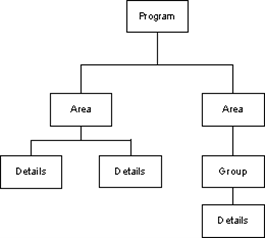
Programs are the highest level in CAPP, and each program corresponds to a specific academic goal, such as a degree, diploma, certificate or other goal defined by your institution. Programs can have a set of general requirements, such as:
- Minimum required number of courses or credits
- Minimum required courses or credits in residency
- MinimumGPA for the entire program
- Minimum grade for any course used to fulfill a program requirement
- Non-course requirements, such as a thesis or an internship.
- Required student attributes, such as First-YearStudent or Achieved Senior Status.
Programs also have areas attached to them, and each area has its own requirements. In turn, areas can have detail requirements (such as specific courses) or groups that have their own detail requirements. See Set up CAPP for a complete discussion of setting up programs, areas, and groups, and all necessary procedures.
The basic structure of a program is illustrated in the following figure.
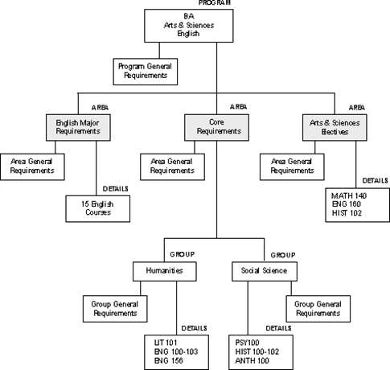
As this example shows:
- A program has its own general requirements and area attachments
- Each area has its own general requirements and detail attachments, which can be either courses or groups
- Each group has its own general requirements and detail attachments, which are courses
Programs can be linked to curriculum rules (see Set up curriculum rules, for more information) or they can be curriculum-independent. Programs are also either “captive” or “non-captive.”
Curriculum-independent programs
A curriculum-independent program can be used to check, for example, that students have satisfied all components of the core curriculum.
Because this goal does not correspond to a program that a student can apply to or pursue, you would not define it as a curriculum-dependent program.
You can also use a curriculum-independent program to define a highly-tailored, self-designed program. When you leave the Curriculum Dependent indicator cleared on the Program Definition Rules (SMAPRLE) form, you can attach a single student ID to the program rule. When you attach an ID to a program rule, the program is reserved for that student's use only.
If you have a highly tailored program that you want to apply to several students, you can do one of the following:
- Create the program and its requirements for the first student, and then copy the program for each of the other students.
- Create the program and its requirements, and, without assigning it to any students on SMAPRLE, designate the program as the compliance curriculum in compliance requests created for other students on the Compliance Request Management (SMARQCM) form.
Captive programs
A captive program is one in which all detail requirements are defined in areas that are attached directly to the program, and only the attached areas will be evaluated during a compliance review for a student in the program.
During a compliance review of a captive program, only attached areas are processed, and no areas are selected dynamically from the Area Library Form (SMAALIB). In other words, any area qualifiers that are defined for the area in the area library are not examined.
The following figure shows an example of how compliance treats a captive program.
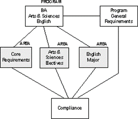
In this example, the program general requirements and the requirements for the three attached areas (Core Requirements, Arts and Sciences Electives, and English Major) must be fulfilled for the student to satisfy the program goal.
Non-captive programs
A non-captive program is one in which areas that make up the program can be attached directly to the program or selected dynamically.
The only areas that can be selected dynamically are those for which the Dynamic check box on the Area Library (SMAALIB) form has been selected and whose qualifiers match the student’s characteristics.
In non-captive programs, attached areas whose qualifiers do not match the student’s characteristics are discarded and reported as unused areas. The advantage to attaching areas to a non-captive program is that you have increased control over area priority and course and attribute re-use.
The following figure shows an example of how compliance treats a non-captive program.
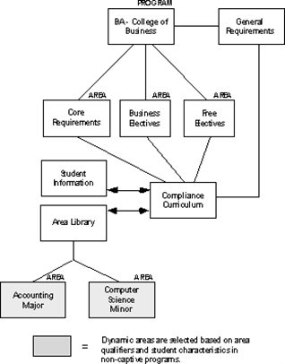
In this example, the Core Requirements, Business Electives, and Free Electives areas are attached directly to the program. Students seeking this goal are required to fulfill the general requirements of the program and all of the attached areas unless an area’s qualifiers do not match the student’s characteristics, in which case the area is discarded.
In addition, the Accounting Major and Computer Science Minor area requirements are selected by compliance for students majoring in Accounting and minoring in Computer Science.(A student majoring in Business Management and minoring in Statistics would have those areas selected instead.)
Dynamic compliance
Dynamic compliance allows you to specify criteria for areas that can be applied to a program.
Any area that meets the criteria can then be applied to students within the program.
Dynamic compliance has the following requirements.
- The program must be non-captive.
- Only dynamic areas will be selected.
- Attached areas might be discarded if the area's qualifiers do not match the student's attributes or are not part of the curriculum rule for the compliance request.
- Areas are processed in priority order. An area's priority is determined based on the priority established in the Program Area Attachments window of the Program Requirements (SMAPROG) form for attached areas, the DynamicallySelected Area Override window for dynamically selected areas, or the default priority assigned on the Area Definition (SMAAREA) form for dynamically selected areas.
These choices represent a hierarchy in which area attachment priorities are considered first, then dynamic overrides, then default area priorities. In other words, use dynamically selected overrides if you want an area considered in priority order based upon the qualifiers that caused it to be selected instead of the default priority assigned to the area.
- For areas that are selected dynamically, their course and attribute reuse indicators will be set based on how the reuse indicators associated with the source of the area's priority are set. For example, if an area's priority is determined by the Dynamically Selected Override window, the reuse indicators from that window are used.
The compliance process determines which dynamic areas to use based on the qualifiers defined Area Library (SMAALIB) form.
While dynamic areas can be attached to both captive and non-captive programs, the purpose of attaching a dynamic area to a non-captive program is to control the priority, reuse indicators, and year rule for the area within the program.
Example
Let's say your BA in English and BS in Accounting programs are non-captive. You have defined the following with appropriate qualifiers:
- Accounting Major
- English Major
- Core Requirements
- Arts and Sciences Electives
None of the areas are attached to either program. This scenario is shown in the following figure.
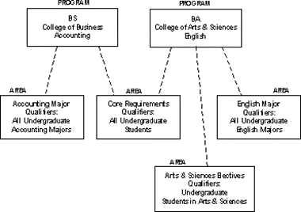
The system would take the following actions.
- The core requirements would be applied to all undergraduate students.
- The Arts and Sciences electives would be applied to only undergraduate students in Arts and Sciences.
- The English major requirements would be applied to only undergraduate English majors.
- The Accounting major requirements would be applied to all undergraduate Accounting majors.
Area libraries
All areas and their qualifiers are defined in the area library. Dynamic areas are selected from the area library by non-captive programs based on area qualifiers and student characteristics.
The following figure shows an example of how the compliance process selects dynamic areas from the area library for non-captive programs.
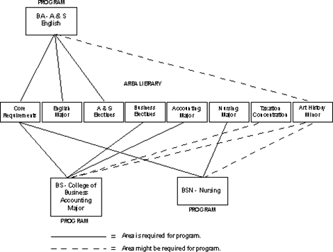
In this example, certain areas are attached to certain programs. The attached areas are used if a student’s characteristics match the area’s qualifiers, but are discarded if the qualifiers and student characteristics do not match. Other areas are selected dynamically based on area qualifiers and student characteristics.
In the examples shown, compliance would attempt to apply the Core Requirements, English Major, and Arts & Sciences Elective Areas to all students pursuing the goal of a BA in English in the College of Arts and Sciences. It would also apply the requirements of the Computer Science Minor to only those with a declared minor in Computer Science.
The requirements of the Computer Science Minor area would also be applied to any students pursuing a BSN in Nursing or a BS in Accounting with a declared minor in Computer Science.
Validation forms
Because the majority of the information processed by CAPP comes from other modules (for example, Recruiting, Admissions, and General Student) within the Banner Student system, it is helpful to be familiar with the forms that need to be populated in order for you to define program requirements in CAPP.
The following list tells you what validation forms are called by each CAPP form.
| Validation form | Application/Functional form | ||
|---|---|---|---|
| STVACTN | Action Code Validation form |
SMASADJ SMASARA SMASGRP SMASPRG SMQSACR SMQSAGR |
Student Targets, Waivers and Substitutions form Student Area Adjustments form Student Group Adjustments form Student Program Adjustments form AreaCourse/Attribute Attachment form Group Attachment form |
| STVACYR | Academic Year Validation form |
SMAAREA SMAGROP SMAPROG |
Area Requirements form Group Requirements form Program Requirements form |
| STVATTR | Attribute Validation form |
SMAAREA SMAGROP SMAPROG SMASADJ SMASARA SMASGRP SMASPRG SMQSACR SMQSAGR |
Area Requirements form Group Requirements form Program Requirements form Student Targets, Waivers and Substitutions form Student Area Adjustments form Student Group Adjustments form Student Program Adjustments form Area Course/Attribute Attachment form Group Attachment form |
| STVATTS | Student Attribute Validation form |
SMASGRP SMQSACR SMQSAGR SMAALIB SMAAREA SMAGROP SMAPROG |
Student Group Adjustments form Area Course/Attribute Attachment form Group Attachment form Area Library form Area Requirements form Group Requirements form Program Requirements form |
| STVATYP | AddressType Code Validation form | SMARQCM | Compliance Request Management form |
| STVCAMP | CampusCode Validation form |
SMAALIB SMAAREA SMAGROP SMAPRLE SMAPROG SMARQCM SMASARA SMASGRP SMASPRG SMQSACR SMQSAGR SOACURR |
AreaLibrary form Area Requirements form Group Requirements form Program Definition Rules form Program Requirements form Compliance Request Management form Student Area Adjustments form Student Group Adjustments form Student Program Adjustments form Area Course/Attribute Attachment form Group Attachment form Curriculum Rules form |
| STVCOLL | College Code Validation form |
SMAALIB SMAAREA SMAGROP SMAPRLE SMAPROG SMARQCM SMASARA SMASGRP SMASPRG SMQSACR SMQSAGR SOACURR |
AreaLibrary form Area Requirements form Group Requirements form Program Definition Rules form Program Requirements form Compliance Request Management form Student Area Adjustments form Student Group Adjustments form Student Program Adjustments form Area Course/Attribute Attachment form Group Attachment form Curriculum Rules form |
| STVCPRT | Compliance Type Code Validation form |
SMACPRT SMARQCM |
Compliance Print Type Rules form Compliance Request Management form |
| STVDEGC | Degree Code Validation form |
SMAALIB SMAPRLE SMARQCM SOACURR |
Area Library form Program Definition Rules form Compliance Request Management form Curriculum Rules form |
| STVDEPT | Department Code Validation form |
SMAALIB SMAAREA SMAGROP SMAPROG SMARQCM SMASARA SMASGRP SMASPRG SMQSACR SMQSAGR SOACURR |
Area Library form Area Requirements form Group Requirements form Program Requirements form Compliance Request Management form Student Area Adjustments form Student Group Adjustments form Student Program Adjustments form Area Course/Attribute Attachment form Group Attachment form Curriculum Rules form |
| STVDFLT | Compliance Default ParameterValidation form | SMADFLT | Compliance Default Parameters form |
| STVLEVL | LevelCode Validation form |
SMAALIB SMAAREA SMAGLIB SMAGROP SMAPRLE SMAPROG SMARQCM SMASARA SMASGRP SMASPRG SMQSACR SMQSAGR SOACURR |
Area Library form Area Requirements form Group Library form Group Requirements form Program Definition Rules form Program Requirements form Compliance Request Management form Student Area Adjustments form Student Group Adjustments form Student Program Adjustments form AreaCourse/Attribute Attachment form Group Attachment form Curriculum Rules form |
| STVMAJR | Major, Minor, Concentration Code Validation form |
SMAALIB SMARQCM SOACURR |
Area Library form Compliance Request Management form Curriculum Rules form |
| STVNATN | Nation Code Validation form | SMARQCM | Compliance Request Management form |
| STVORIG | Originator Code Validation form | SMARQCM | Compliance Request Management form |
| STVPRNT | Compliance Print Code Validation form |
SMAAREA |
Area Requirements form |
| SMACPRT | Compliance Print Type Rules form | ||
| SMAGROP | Group Requirements form | ||
| SMAPROG | Program Requirements form | ||
| SMQSACR | Area Course/Attribute Attachment form | ||
| SMQSAGR | Group Attachment form | ||
| SMASARA | Student Area Adjustments form | ||
| SMASGRP | Student Group Adjustments form | ||
| SMASPRG | Student Program Adjustments form | ||
| STVSTAT | State/Province Code Validation form | SMARQCM | Compliance Request Management form |
| STVSUBJ | Subject Code Validation form |
SMAAREA |
Area Requirements form |
| SMAGROP | Group Requirements form | ||
| SMAPROG | Program Requirements form | ||
| SMARQCM | Compliance Request Management form | ||
| SMASADJ | Student Targets, Waivers and Substitutions form | ||
| SMASARA | StudentArea Adjustments form | ||
| SMASGRP | Student Group Adjustments form | ||
| SMASPRG | Student Program Adjustments form | ||
| SMQSACR | Area Course/Attribute Attachment form | ||
| SMQSAGR | Group Attachment form | ||
| STVTERM | Term Code Validation form | SMAALIB | Area Library form |
| SMAAREA | Area Requirements form | ||
| SMAGROP | Group Requirements form | ||
| SMAPROG | Program Requirements form | ||
| SMARQCM | Compliance Request Management form | ||
| SMASADJ | Student Targets, Waivers and Substitutions form | ||
| SMASARA | Student Area Adjustments form | ||
| SMASGRP | StudentGroup Adjustments form | ||
| SMASPRG | Student Program Adjustments | ||
| SMIAOUT | Area Output Inquiry form | ||
| SMICRLT | Compliance Results Inquiry form | ||
| SMIGOUT | Group Output Inquiry form | ||
| SMIPOUT | Program Output Inquiry form | ||
| SMISLIB | Student Adjustment Query form | ||
| SMQSAGR | Group Attachment form | ||
| SMQSACR | Area/CourseAttribute Attachment form | ||
| SOACURR | Curriculum Rules form | ||
Set up a sample area and program
Learn how CAPP works. It is not designed to demonstrate everything you need to know for CAPP; instead you can use it as a "quick start" sample.
What follows is a step-by-step set of instructions for setting up a sample area and program in CAPP, then running a compliance request and reviewing its results. There are cross-references to pertinent procedures.
It is recommended that you perform these steps in a test database, not your live one.
Although you can set up CAPP either top-down (programs first, then areas, and finally, if appropriate, groups) or bottom-up (groups first [if appropriate], then areas, and finally programs), this procedure uses a bottom-up sequence. First you will define an area, and then a program.
In this sample procedure, you will set up an area to evaluate a student's compliance with the requirements for a major in Psychology. The sample uses the following requirements for the undergraduate Bachelor of Arts degree with a major in Psychology as they might appear in your institution's catalog.
The student must complete 11 courses with a minimum GPA of 2.50. No more than three courses can be transferred from another institution.
| Core courses | PSY101 PSY 211 PSY225 PSY330 PSY341 PSY360 |
| Additional courses | One from:
Four PSY courses, at least two at the 300 – 400 level, including one from:
|
Add an area to the area library
Learn how to add an area to the area library.
Procedure
Define the area's general and detail requirements
You will build our sample area's requirements from scratch.
Procedure
Create a program code
Learn how to create a program code.
Procedure
Define the program’s general requirements and attaching areas
As with the area, you will build sample program’s requirements from scratch.
Procedure
Create and submit a compliance request
Now you will create a compliance request and submit it for processing. Before beginning this procedure, you will need to create a system ID for a fictional person or identify the system ID for a real person you would like to use for testing.
About this task
Testing CAPP using production data presents very little risk as compliance results generated from testing can be easily removed.
As you consider which system ID to use for testing purposes, note that it would be most helpful for the ID to have one or more of the required courses loaded into the institutional or transfer academic history forms.
Procedure
Review compliance request results
Learn how and where within the system you can review the results of a compliance request that has been processed.
Before you begin
To follow the steps presented below, you must note ID and compliance request number used in the previous procedure.
About this task
By following the steps presented below, you will begin to develop an understanding of how you can "drill down" through the different levels within the hierarchy of a CAPP program.
Procedure
Common concepts
Connectors
Connectors connect a thought into a statement by using an "and-or" logic.
Basically, you are telling CAPP that you want to use one of the following:
- X number of credits and X number of courses
- X number of credits or X number of courses
- Just credits or just courses (the connector is none)
The "And" connector
The "and" connector indicates that the requirement must be fulfilled using both of the values that you specify.
Example
If you want to require 126 credits and 42 courses, you would set up this connector statement:
| Total Required Credits field | Connector | Total Required Courses field |
|---|---|---|
| 126 | And | 42 |
The "Or" connector
The "or" connector indicates that the requirement must be fulfilled using either of the values you specify.
Example
If you want to require 126 credits or 42 courses, you would set up this connector statement:
| Total Required Credits field | Connector | Total Required Courses field |
|---|---|---|
| 126 | Or | 42 |
The "None" connector
A "None" connector is the most specific: you are telling CAPP to use an “all or nothing” approach.
Example
Assume you are a credit-driven institution. You aren't interested in how many courses a student takes; you require only a minimum of 126 credits. You could set up this connector statement:
| Total Required Credits field | Connector | Total Required Courses field |
|---|---|---|
| 126 | None |
Reuse
Reuse indicators control how courses and course attributes can be used within CAPP. In most cases, use reuse indicators to specify that an already used course or attribute can be reused to fulfill another requirement in a different area or group.
For example, one course (or one of its attributes) may be required to fulfill a general education requirement, but may also be required within a specific major. Reuse allows the course/attribute to be used to fulfill both requirements. When a course/attribute is reused, it can fulfill several detail requirements, although its credits are used only one time toward the minimum credit requirements of the program.
Default reuse indicators are assigned to each area and group, and specific reuse indicators are assigned when you attach an area to a program or a group to an area. The reuse indicators are None, Out, In, Both, and Within and are described in the following table.
| Indicator | Description |
|---|---|
| None | You cannot reuse a course/attribute. |
| Out | Courses/attributes used in an area or group can be released (go out) for reuse in other areas, but already used courses/attributes cannot come in to the area/group. |
| In | Courses/attributes previously used can come in and be considered for reuse, but if used in the current area or group, they cannot go out to be used by any additional areas or groups. |
| Both | Previously used courses/attributes can go out if used, and can also come in if already used. |
| Within | Within reuse is a little different than the others. Within deals with use of the course and its attributes within the same area or group. If within reuse is not allowed, either a course or one of its attributes can be used within the same area or group. If within reuse is allowed, both the course and one of its attributes can be used within the same area/group. When within reuse is allowed, the course’s credits will be used only one time toward the minimum credits required by the group, area, or program. |
The following figure shows how the None, Out, In, and Both reuse indicators work.
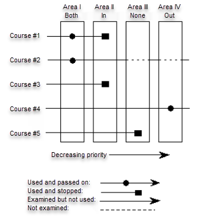
Area I has a reuse indicator of "Both"
Courses1 and 2 fulfill the requirements in Area I. These courses are used in Area I and then flagged as used. Because Area I has a Both reuse indicator, used courses are passed along to be used in other areas.
Area II has a reuse indicator of "In"
Accepts all courses regardless of prior use. Courses 1 and 3 fulfill the requirements in Area II. These courses are used in Area II, and because Area II has an In reuse indicator, these courses are "trapped" in Area II.
Area III has a reuse indicator of "None"
Uses courses not yet used. Course 5 fulfills the requirements of Area III. Course 5 is used by Area III and then is trapped in Area III. Course 5 cannot be reused by any lower priority area.
Area IV has a reuse indicator of "Out"
Accepts courses not yet used. It passes all of its courses out for use by lower priority areas. Courses 2 and 4 fulfill the requirements of Area IV. Area I already used Course 2, so it is not used by Area IV. Course 4 has not been used in any other (higher priority) area, so it can be used by Area IV. Course 4 will be flagged as used and passed back out of Area IV to be reused by other areas.
Example: Within reuse indicator
The Within reuse indicator works as follows.
You have a single course, ENGL 1500, which has the attribute Writing Intensive. You have requirements for both ENGL 1500 and a course with the Writing Intensive attribute.
If written as:
ENGL1500" and "Writing
Intensive on separate lines, these are now two separate requirements and within reuse is a factor.
If within reuse is allowed, a single ENGL 1500 course which also has the Writing Intensive attribute can fulfill both requirements.
If written as:
ENGL1500/Writing Intensive
(all on one detail line), then the requirement will be satisfied only when ENGL 1500 is taken when the course also has the Writing Intensive attribute. In this case, within reuse is not a factor.
The combination of the reuse indicators and the way in which requirements are written have significant implications on the results of compliance:
- The In, Out, Both, and None reuse indicators control reuse of courses and attributes across areas or groups. These reuse indicators on groups control reuse of courses and attribute across groups attached to the same area.
- The Within reuse indicator controls reuse of courses and attributes only within an area/group.
There are two types of reuse processing:
- Multiple-entity, which is explained in detail in Multiple-Entity Reuse Processing
- Single-entity, which is explained in detail in Single-Entity Reuse Processing
Both multiple-entity processing and single-entity processing can be done in different programs at the same institution. The type of reuse processing to be performed is controlled at the program level. An indicator on the Program Requirements (SMAPROG) form is used to specify when single-entity reuse processing should be performed for a program.
Compliance performs reuse processing using multiple-entity processing rules unless you make a change. Select the Single Entity check box in the General Requirements block of the Student Program (SMAPROG) form to indicate that the program should be evaluated using single-entity processing.
Multiple-entity reuse processing
The examples that follow do not describe all of the details about reuse using four components. Reuse types (In, Out, Both, None) and the concept of Within reuse are not important to these examples.
These examples are provided to demonstrate very basic reuse concepts. The basic concepts do not change when the more detailed concepts of reuse type and within reuse are added.
Example 1
The course ENGL 1005 exists and has the attributes WRIT (Writing), COMP (Composition), and LITR (Literature). This course has four components: the course itself and three attributes.
Regardless of the reuse flags, each of these four components could be used by compliance to fulfill different requirements (as long as a different part of the course is used) before any reuse is considered to have occurred. Therefore, the one course could be used to fulfill all of the following requirements:
| Subj | CRSE Low | Crse High | Attr | Req Credits |
|---|---|---|---|---|
| ENGL | 1005 | 3.00 | ||
| WRIT | 3.00 | |||
| COMP | 3.00 | |||
| LITR | 3.00 | |||
If each requirement is in a different area, the person would earn 3.00 credits toward each area, but only 3.00 total credits toward the program. Regardless of the number of times used, a course’s credits will accumulate toward the program only one time.
In the example given above, none of the uses of the course is considered "reused," because a different part of the course is used each time. No part is being used a second time, which fits the dictionary definition of "reuse."
Example 2
In the following example, the course is subject to reuse processing and control by reuse rules, because the course itself is used more than one time. (Any use of the subject or course number, in combination or separately, is considered to use the "courseness" of the course. Thus, the course used by its subject alone, course number alone, or subject and course number in combination is considered to be a use of the "course".)
| Subj | Crse Low | Crse High | Attr | Req Credits |
|---|---|---|---|---|
| ENGL | 1005 | 3.00 | ||
| ENGL | 15.00 | |||
| 1000 | 4999 | COMP | 30.00 |
The above examples demonstrate the way in which reuse has been implemented in the compliance evaluation code. However, the course used above does not have four independent components. It is, instead, one single entity, and the subject/course and each of its attributes are seen as merely a different "alias" for the same entity.
This additional understanding of reuse in compliance processing is called single-entity reuse processing.
Single-entity reuse processing
Single-entity reuse processing disallows the use of any portion of the course (by "courseness"or by attribute) if any other portion of the course has already been used, and reuse is not allowed.
When reuse is allowed, it makes no difference whether the course is used first as the course or as one of its attributes; the components of the course will all be treated as aliases of the same entity.
Because the components are all be treated as one entity, only one set of reuse controls is needed, and the course reuse flags (on groups, areas, and program/area attachments) are used to control reuse processing when single-entity reuse is in effect. (The attribute reuse flags are not used at all when single-entity reuse is in effect.)
A flag is used at the program level to specify that single-entity reuse is to apply to the program. When the flag is not set, multiple-entity reuse will continue to function as described above, and both sets of reuse flags will be used.
The following are some examples of how single-entity reuse processing will provide different results from multiple-entity reuse processing.
Example 1
- Area GENED requires, among other things, that a student complete ENGL 1005 and ENGL 1006. The area’s reuse flags are Out/Out.
- Area COMPETENCY requires, among other things, that a student complete 12.00 credits in courses which have the attribute WRIT (WritingIntensive). The area’s reuse flags are Both/Both.
- A student has taken ENGL 1005, and the course has the attributes WRIT (Writing Intensive), COMP (Composition), and LITR (Literature).This course has four parts: the course itself and three attributes.
The following are the results which will occur when the program is flagged for multiple-entity processing:
- Area GENED will use ENGL 1005 as the course alone.
The "courseness" of ENGL 1005 will be flagged as used. None of the course’s attributes are flagged used. The used course is allowed out of the area to be used again, if allowed by the subsequent areas’ reuse indicators. (The unused attributes also go out to be used by later areas. Each of the unused attributes is free to be used anywhere, because they are not yet subject to reuse controls.)
- Area COMPETENCYwill use the WRITattribute of ENGL 1005.
The attribute WRIT will now be flagged as used. It is allowed out of the area to be used again, if allowed by the subsequent areas’ reuse indicators.
In subsequent areas, the course ENGL 1005 and the attribute WRIT are eligible for use subject to the reuse flags on the subsequent areas. Attributes COMPand LITR are eligible to be used in any area, because they have not yet been used.
The following are the results which will occur when the program is flagged for single-entity processing:
- Area GENED will use ENGL 1005 as the course alone.
The"courseness" of ENGL 1005 and all of the course’s attributes will be flagged as used. The course and its attributes are allowed out of the area to be used again, based upon the Course reuse flag for the subsequent areas.
- Area COMPETENCYwill use the WRIT attribute of ENGL 1005.
The attribute WRITis used, because used courses are allowed to come into the area (the area’s course reuse flag is Both). It is allowed out of the area to be used again, if allowed by the subsequent areas’ reuse indicators.
Example 2
GE202 is a course. It has a seven attributes:
- Attribute1: CE00
- Attribute2: CE17
- Attribute3: EENO
- Attribute4: EEN1
- Attribute5: MY2E
- Attribute6: QNSC
- Attribute7: SCI
Because GE 202 has seven attributes, it has a total of eight individual parts: the courses itself, which is identified by the subject and course number (GE 202), and the seven attributes. In multiple-entity reuse, if each of those "parts" is used alone, GE 202 could be used a total of eight times before any use is considered a reuse. In single-entity reuse, GE 202 could only be used one time before any use is considered a reuse.
In addition to the eight individual parts, there can be combinations of parts: GE 202 (as the course) used in combination with any of its attributes. When used against a requirement which is written with subject, course low, or course high, and an attribute, both the course part and the attribute part are being looked for or used.
Here are some examples of how GE 202 will be treated, using both single-entity reuse and multiple-entity reuse. You will see that the results will be different, depending upon the type of reuse processing in effect for the program.
Program ECE requires several areas. Among them are ECESCI and ECE2TECH.
- Area ECESCI looks for attribute SCIattachedto a course in the range 100 - 997. Its reuse flags are In/In.
- Area ECE2TECH looks for only the attribute CE00.Its reuse flags are In/In.
The following is how GE 202 and its attributes will be used when the ECEprogram is set for multiple-entity reuse:
- The attribute SCIattachedto GE 202 is used against area ECESCI.
- The course GE 202 is also used by area ECESCI, because the requirement includes the course range.
- Neither the SCI attribute of GE 202 nor the course GE 202 can go out to be used again, but the rest of the attached attributes do go out and can be used because they have not yet been used.
Area ECE2TECH looks for only the attribute CE00.Its reuse flags are In/In.
- Attribute CE00 attached to course GE 202 is used here, because it has not been used before.
- If this requirement included a range of course numbers, GE 202 would not be able to be used here, because the "course" part was trapped by area ECESCI.
The following is how GE 202 and its attributes will be used when the ECEprogram is set for single-entity reuse. (This explanation assumes that the only change to the program’s requirements is the single-entity reuse flag in the program general requirements):
- Area ECESCI uses the same elements. However, every used course and every attribute attached to any used course will be marked as used and will be stopped here, because the course reuse flag is In. This means that used parts (and in single-entity reuse,every part will be used when any single part is used) cannot go out for later reuse.
- Area ECE2TECH looks for unused CE00 attributes. The CE00 attribute for GE 202 was not used, but in single-entity reuse, all parts are used when any single part is used. Area ECESCIusedall parts of GE 202 and did not let them out. GE 202 will not be used here (or in any later area), because it was used and held in area ECESCI.
Reuse of courses and attributes
With multiple-entity reuse, each piece of the course is a separate entity and can be used independently.
For example, if you had course MA 101 with attributes of MATH and CALC, the course could be used in one area as MA 101 and attribute CALC in another without reuse coming into play, leaving the attribute of MATH as unused and available for other requirements.
With single-entity, attributes are like "nicknames" and are simply a different way of identifying the course. When you have used the above course referenced by its nickname or attribute of MATH, the course MA 101 is used, as is its other nickname, CALC. Any use after the first use of any part must be done according to availability based on reuse flags.
Refer to Reuse for a complete discussion of reuse in CAPP.
Sets and subsets
A set is a collection of records. A subset is a division within the set.
When you use set and subset, these principles apply:
- Different sets are an AND condition.
- Like subsets within a set are an AND condition.
- Unlike subsets within a set are an OR condition.
- Null sets/subsets are required elements and are an implied AND among all records with a null set/subset.
The following example shows how to use sets and subsets.
To satisfy a requirement, a student must take:
HIST 110, 111, and 114
OR
ANTH 100-102
AND
PSYC100
OR
SOC 110
The words AND and OR in the above requirement are your conditions. Let's look at this one segment at a time.
To satisfy this requirement, a student must take: HIST 110, 111, AND 114.
Using set and subset logic, this statement could be translated as follows:
| SET | SUBSET | SUBJ | COURSE # Low |
|---|---|---|---|
| A10 | 111 | HIST | 110 |
| A10 | 111 | HIST | 111 |
| A10 | 111 | HIST | 114 |
We have created a set of courses called A10and three subsets called 111. The like subsets within a set are an implied AND condition. In this example, you have created three "like" subsets of 111, so you are telling CAPP that the student must take the courses 110, 111 AND 114.
Why did you name this set A10and the subsets 111? The coding of sets and subsets is completely at your discretion. You may have a meaningful coding system that works for you, and will help you quickly tell sets apart. There are, however, some guidelines for naming sets and subsets:
- Set is a character field, up to three characters in length, beginning with a letter.
- Subset is a numeric field, three digits in length. If you do not enter all three digits in a subset, CAPP will insert leading zeros in the spaces you have left empty so that it can do a correct priority sort on your entries.
The compliance process sorts your entries and selects courses according to the following sort priority:
- Null entries (entries without a rule or set and subsets)
- Null entries with a rule
- Sets sorted alphabetically
- Subsets within a set, sorted numerically
You can define very specifically how compliance selects courses/attributes within detail requirements. For example, you may have four courses that are absolutely required. If you do not care about the order in which these requirements are fulfilled, define the requirements without the use of sets, subsets or rules (this type of definition was called a "null entry" in our general principles). These requirements will be examined first by compliance. If you do care about the order in which these requirements are examined, use a different set for each requirement, using set codes to define the order in which you want the requirements examined.
When you define sets and subsets, higher priority sets should have codes using letters earlier in the alphabet: sets with the highest priorities should begin with A's and B's, and those with the lowest should begin with Y's and Z's. Using this structure, you can control the order in which compliance handles the course and attribute requirements.
Now let's continue to build this requirement.
To satisfy this requirement, a student must take:
HIST 110, 111, and 114
OR
ANTH 100-102
In this part of the statement, you have specified that the student must take the first three courses you defined or ANTH 100-103. You would then add different subset to the formula:
| SET | SUBSET | SUBJ | COURSE # Low |
|---|---|---|---|
| A10 | 111 | HIST | 110 |
| A10 | 111 | HIST | 111 |
| A10 | 111 | HIST | 114 |
| A10 | 222 | ANTH | 100 |
| A10 | 222 | ANTH | 101 |
| A10 | 222 | ANTH | 102 |
Our new subset of 222is unlike the previous subset of 111, but is still part of the A10 set. This is an OR condition because unlike subsets within a set are an implied OR condition.
Now let's finish building this requirement.
To satisfy this requirement, a student must take:
HIST 110, 111, and 114
OR
ANTH 100-102
AND
PSYC 100
OR
SOC 110
The last part of our statement is linked to the HIST/ANTH courses with an AND statement, so you want to build a new set:
| SET | SUBSET | SUBJ | COURSE# Low |
|---|---|---|---|
| A10 | 111 | HIST | 110 |
| A10 | 111 | HIST | 111 |
| A10 | 111 | HIST | 114 |
| A10 | 222 | ANTH | 100 |
| A10 | 222 | ANTH | 101 |
| A10 | 222 | ANTH | 102 |
| A20 | 111 | PSYC | 100 |
| A20 | 222 | SOC | 100 |
Because different sets are an implied AND condition, our A20 set is now linked to the A10 set. And because you used unlike subsets within the A20 set, you are telling CAPP to take PSYC 100 OR SOC 100.
Rules
When you have more complicated requirement, you might need to use a rule.
Attachment rules use the same variables as other area or group attachments, but add the concept of conditions. Rules will allow you to specify the number of conditions that must be satisfied.
Example for area group attachments
One of your requirements says, "Fulfill the requirements of two out of these three groups."
You would not be able to define this requirements using area or group attachments alone. You could define this requirement using sets and subsets, but would need to define many different combinations to arrive at the desired results.
Example for area or group course/attribute attachments
One of your requirements says, "Take three courses in History, American Studies, Sociology, or Psychology, each in a different discipline."
If you used standard course/attribute attachments, you could define these requirements as a group, but could not place a limit on exactly three courses and also could not enforce the "each in a different discipline" requirement.
You could define this requirement using sets and subsets, but would need to define a lot of different combinations to arrive at the desired results. You still would not be able to enforce the requirement for exactly three courses.
Using rules, you can define these requirements exactly.
When an area or group is being set up, if a value is entered in any of the Rule fields but the rule is not actually defined, compliance results will show the rule value, but the window for viewing the rule will not be accessible. It is, therefore, important to define rules properly and not just enter a value in the Rule field.
Rule processing
The system uses rules to handle situations in which Boolean logic cannot correctly process requirements.
Some examples of situations in which Boolean logic cannot correctly process requirements include the following:
- To select three conditions from five conditions
- To select one course from list of possibilities
- To select one course each from three of the five lists below
- To use an umbrella rule and maximum values that span detail requirements
If necessary, you can use both list processing and Boolean logic in rules. For example, you might need a rule that requires two out of three conditions but that uses Boolean logic within the conditions (all detail lines are required and must be met), or you might need to use list processing logic (use whatever detail lines are necessary to satisfy the umbrella requirements) within the conditions.
Each rule is defined by its “umbrella” and its detail line section. The rule umbrella contains information that drives processing. This information includes the number of required conditions, per-condition information (credits required, courses required, maximum credits, and maximum courses), and total rule information. A value must be defined in at least one of the fields that make up the umbrella for any rule processing to occur.
During rule processing, values entered in the maximum credits/courses per-condition and maximum credits/courses (total) will never be exceeded. The umbrella and detail line section work together, but the umbrella is the controlling force in the processing. Thus, even if each detail line is minimally satisfied but the umbrella requires more credits or course than have been applied to the detail lines, the overall rule will not be satisfied.
For example, a rule umbrella might require 15 credits and that three (out of four) conditions be satisfied. However, even if three of the four detail lines in the detail line section have one course (the minimal requirement for each detail line) applied to them, the overall total of 15 credits might still not be satisfied.
The rule detail line section contains course and attribute attachment requirements to support the required items in the umbrella. It is the presence or absence of per-condition information that determines whether list processing or Boolean logic drives the detail line processing.
List processing
If values are entered in any of the per-condition fields (such as required credits/courses per condition or maximum credits/courses per condition), the requirements defined in detail line section are considered to be lists or sub-lists of possibilities.
- Different values in the Set field denote different conditions.
- Entries with the same set and subset values are considered one list.
- Different subsets for a given set are considered sub-lists, and per-condition information must be satisfied from one sub-list.
- The condition is counted when per-condition requirements are satisfied. This may or may not mean that all detail lines were met.
During list processing, set and subset values are intended to link detail lines together to form lists of possible choices where all choices are not necessarily needed to meet the requirement.Thus, set and subset values function somewhat differently from how they are described.
Boolean logic
If no values are entered in the per-condition fields, the requirements defined in the detail line section are processed using Boolean logic in a manner similar to non-rule detail attachments.
- Different values in the Set fields still denote different conditions.
- Subsets are processed using "and-or" logic.
- For this type of condition to be satisfied, all detail lines must be met.
Courses/attributes that do not satisfy conditions are released so that they can be available to satisfy subsequent conditions
When the system has processed all conditions for a rule, if the number of required conditions is not met, then conditional loop logic is used to reprocess the conditions. Beginning with the first condition, conditional loop logic re-evaluates conditions and apply courses that fit their criteria, until the number of required conditions has been re-evaluated
Rule processing uses sets and subsets in two ways, based on values in the per-condition fields of the umbrella.
- If there is no per-condition information in the umbrella, then subset processing is handled as Boolean logic, in a manner similar to its use in group and area course attachments. The release of courses will be different based on the conditions in the rule.
- If there is per-condition information in the umbrella, then subsets denote lists and sub-lists, and the detail requirements are considered to be a list of possibilities.
Therefore, it is the presence or absence of per-condition information that determines whether list processing or Boolean logic drives the detail line processing.
Rule examples
Review the following examples of rule processing. They are basic examples, to illustrate the various methods of detail processing.
Example 1: Select six credits from a list of courses
For list processing, a value must be entered in the required credits/courses per-condition or maximum credits/courses per-condition fields. Because there is only one list (for example, one condition), that requires six credits, the per-condition fields drive processing and denote the use of lists or sub-lists.
Umbrella: Number of conditions required = 1
Per-condition = 6 credits
| Cond | Set | Subset | Course | Courses Used |
|---|---|---|---|---|
| 1 | A | 100 | MATH 101 | MATH 101 - 3 credits |
| 1 | A | 100 | MATH 103 | |
| 1 | A | 100 | MATH 104 | MATH 104 - 3 credits |
| 1 | A | 100 | MATH 211 | |
| 1 | A | 100 | MATH 212 |
Let’s say a student has MATH 101 (three credits) and MATH 104 (three credits).
- The condition is counted because the requirement of six credits per-condition is met.
- The rule is met because the number of conditions required is met.
Example 2: Select six credits from a sub-list of courses
For list processing, a value must be entered in the required credits/courses per-condition or maximum credits/courses per-condition fields. There are two sub-lists in one condition. All six credits must be from one sub-list. The per-condition fields drive processing and denote the use of lists or sub-lists.
Umbrella: Number of conditions required = 1
Per-condition = 6 credits
| Cond | Set | Subset | Course | Courses Used |
|---|---|---|---|---|
| 1 | A | 100 | MATH 101 | MATH 101 - 3 credits |
| 1 | A | 100 | MATH 103 | |
| 1 | A | 100 | MATH 104 | MATH 104 - 3 credits |
| 1 | A | 200 | MATH 211 | |
| 1 | A | 200 | MATH 212 |
Let’s say a student has MATH 101 (three credits), MATH 104 (three credits), and MATH 211 (three credits).
- The condition is counted because the requirement of six credits per-condition is met, and both courses are from subset 100.
- The rule is met because the number of conditions required is met.
Example 3: Select a series of courses
This example demonstrates selecting a series of courses based on difficulty, where one, two, or three courses may be required.
Students must have MATH 101, 103, and 104, or they must have MATH 211 and 212, or they must have MATH 410.
((MATH 101, 103, and 104) or (MATH 211 and 212), or (MATH 310))
Because there is no per-condition information, Boolean logic is used to drive processing and to determine if the condition is met.
Umbrella: Number of conditions required = 1
Per-condition = NULL
| Cond | Set | Subset | Course | Courses Used |
|---|---|---|---|---|
| 1 | A | 100 | MATH 101 | MATH 101 - 3 credits |
| 1 | A | 100 | MATH 103 | |
| 1 | A | 100 | MATH 104 | MATH 104 - 3 credits |
| 1 | A | 200 | MATH 211 | |
| 1 | A | 200 | MATH 212 | |
| 1 | A | 300 | MATH 410 |
Let’s say a student has MATH 101 (three credits), MATH 104 (three credits), and MATH 211 (six credits).
- The condition is not counted because the student does not have MATH 103 or meet the Boolean logic for subsets 200 and 300.
- The rule is not met because the number of conditions satisfied is zero.
Example 4: Select courses from two subjects (out of four)
Students must have two sequences from the following subjects:
Physics, Math, Chemistry, and Biology.
((Physics101 and 102) or
(MATH 101, and 102, and 103) or
(Chem 101, and 201, and 301, and 401) or
(Biol 202, and 203, and 204))
Because there is no per-condition information, Boolean logic will be used to drive processing and to determine if the condition is met.
Umbrella: Number of conditions required = 2
Per-condition = NULL
| Cond | Set | Subset | Course | Courses Used |
|---|---|---|---|---|
| 1 | A | 100 | PHYSICS101 | |
| 1 | A | 100 | PHYSICS102 | |
| 2 | B | 100 | MATH 101 | MATH 101 - 3 credits |
| 2 | B | 100 | MATH 102 | MATH 102 - 3 credits |
| 2 | B | 100 | MATH 103 | MATH 103 - 3 credits |
| 3 | C | 100 | CHEM 101 | |
| 3 | C | 100 | CHEM 201 | |
| 3 | C | 100 | CHEM 301 | |
| 3 | C | 100 | CHEM 401 | |
| 4 | D | 100 | BIOL 202 | BIOL 202 - 3 credits |
| 4 | D | 100 | BIOL203 | |
| 4 | D | 100 | BIOL204 |
Let’s say a student has MATH 101 (three credits), Math 102 (three credits), MATH 103 (three credits), and BIOL 202 (three credits).
- Condition one is not counted because the student took none of the courses.
- Condition two is counted because the student has all three courses.
- Condition three is not counted because the student took none of the courses.
- Condition four is not counted because the student only has BIOL 202 and not the other two courses.
- The rule is not met because number of conditions is not met (only one condition was counted).
Set up curriculum rules
Curriculum rules are used to define the academic programs in use at your institution.
Each base curriculum rule defines a valid combination of:
- Program (optional)
- Campus (optional)
- Student level (required)
- College (required)
- Degree (required)
Each base curriculum rule must be unique.
You can attach a concentration to a base curriculum rule or to a major. The following figure shows the basic structure of a curriculum rule.
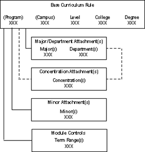
When curriculum checking is in effect, data entered in curriculum-related records must match the criteria specified in the base curriculum rule. For example, let's say that you have defined a curriculum rule as shown in the following figure.
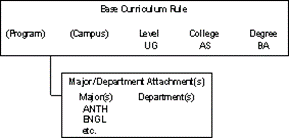
In this example, there is one base rule specifying that the Bachelor of Arts (BA) degree is valid within the College of Arts and Sciences (AS) at the undergraduate (UG) student level, and that majors such as Anthropology (ANTH) and English (ENGL) have been attached. (There would, of course, be many other majors attached.) If a user attempts to enter a Bachelor of Science degree instead of Bachelor of Arts or a graduate degree instead of undergraduate, the system returns an error message.
If you do not assign a program or campus code to a base curriculum rule, the system accepts any value entered in these fields in curriculum-related records. In the same way, if you do not attach a department when you attach a major to a base curriculum rule, the system accepts any department.
This discussion so far has explained curriculum rules in a very simplified way. In practice, curriculum rules can be designed for a greater degree of complexity and control. You accomplish this by associating programs with curriculum rules.
Although you do not need to define your program requirements first, you do need to know your program structure. You also need to define your program rules on the Program Definition Rules (SMAPRLE) form. (A complete discussion of programs, including program rules and requirements, is in Define Programs.)
You can design "generic" programs or "major-specific" programs.
Generic programs
A"generic" program is one that groups all majors related to a level/college/degree combination together in a single program, as shown in the following figure.
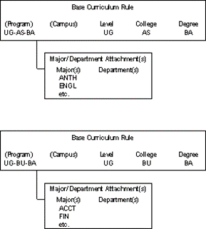
In this example, the top rule is the same one introduced in the previous section but is now associated with program UG-AS-BA. The bottom rule is associated with program UG-BU-BA and specifies the Bachelor of Arts (BA) degree within the College of Business (BU) at the undergraduate (UG) student level, and that majors such as Accounting (ACCT) and Finance (FIN) have been attached. (As before, there would be other programs, and there would also be other majors attached.)
For generic programs such as the ones above, the following guidelines apply.
- The program's overall requirements apply to all students pursuing a level/college/degree combination.
- The program code does not specify the major.
- The program must be non-captive, and at least the major requirements must be selected dynamically based on area qualifiers.
- Non-major areas, such as General Education requirements, do not need to be selected dynamically. They can be attached to the program or not, but if not attached, then they must be selected dynamically based on area qualifiers.
The benefits to this approach are the following.
- Fewer program rules are required, because you will need fewer program codes.
- Fewer curriculum rules are required, because multiple majors will be attached to each base rule.
- You can build curriculum rules without first building program rules, because you do not need program codes to make base curriculum rules unique.
The following are the drawbacks to this approach.
- You will not be able to identify a student's complete set of requirements merely by looking at the program code.
- You will need to define appropriate area qualifiers for the areas that must be selected dynamically.
Major-specific programs
A "major-specific" program is one that applies to only a single major within a level/college/ degree combination, as shown in the following figure.
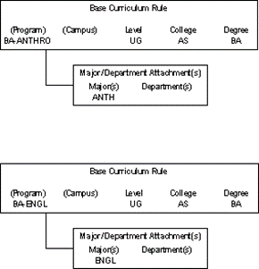
In this example, there are different program requirements for the programs leading to a Bachelor of Arts (BA) degree in the college of Arts & Sciences (AS) at the undergraduate (UG) student level: one set of program requirements for the major in Anthropology (ANTH) and another set of program requirements for the major in English (ENGL). Each program is identified by a different program code, and two curriculum rules are required.
For major-specific programs such as the ones above, the following guidelines apply.
- Each program has a different set of program requirements for its attached major.
- The program code alone identifies the major associated with the program.
- The program can be captive or non-captive.
- All area requirements can be attached directly to the program; area qualifiers do not need to be defined for any attached area.
The benefits to this approach are the following.
- Users who are familiar with your program structure can determine the program requirements that will be applied to a student merely by looking at the program code.
- You do not need to understand or use dynamic areas and area qualifiers when defining program and area requirements.
The drawbacks to this approach are the following.
- More program rules are required, because you will need a program code that identifies the program rules for each major.
- More curriculum rules are required, because a base rule is required for each program code.
- You cannot build curriculum rules without first building program rules, because program codes are needed to make base curriculum rules unique.
- You need to define appropriate area qualifiers for the areas that must be selected dynamically.
Plan your curriculum rules
Curriculum rules are used by the following modules, in addition to CAPP, in Banner Student.
- Recruiting
- Admissions
- General Student
- Registration
- Academic History
Careful planning is therefore required before you build your curriculum rules, otherwise, you might have to rebuild them. Keep the following guidelines in mind.
- Develop your curriculum rules on paper before starting to define them in the system.
- Remember that there is no single "correct" way to define curriculum rules. You must use the structure that works best for your institution's practices.
Set curriculum controls
Use the Curriculum Rules Control (SOACTRL) form to set options related to using curriculum rules and to set the severity level of curriculum checking.
Procedure
Define curriculum rules
Use the Curriculum Rules (SOACURR) form to define your curriculum rules.
Procedure
Display curriculum rules
The Curriculum Rules (SOACURR) form opens in query mode. This procedure explains how to display as many or as few base curriculum rules as you choose.
Procedure
- Access the Curriculum Rules (SOACURR) form.
-
If you want to display all base curriculum rules, continue as follows.
- Leave the Term field blank.
- Go to the next block.
-
Perform an
Execute Queryfunction. - The system displays all base curriculum rules.
-
If you want to display base curriculum rules for a specific term, continue as follows.
- Enter the term code in the Term field.
- Go to the next block.
-
If you want to display all base curriculum rules for the term, perform an
Execute Queryfunction. -
If you want to display only the base curriculum rules meeting certain criteria, enter the appropriate values in the field(s), then perform an
Execute Queryfunction. - The system displays the base curriculum rules meeting that meet your search criteria.
Change curriculum rules for discontinued or modified programs
Learn how to change curriculum rules for discontinued or modified programs.
About this task
When a program is discontinued or modified, you must create a new record (module control,major attachments, and so on) for the new term range and modify the settings for the old term range.
For example, let’s say that for the past ten years your English majors have been required to select a concentration, but effective term 200410, this requirement will no longer apply. The following figure illustrates how this affects the module control record. The same principles apply to the other windows of the Curriculum Rules (SOACURR) form.
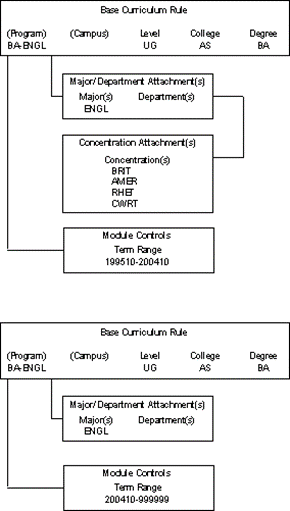
In this example, students who became English majors in term range 199510-200390 continue to have to meet the program requirement that includes a concentration, and the program requirements will apply to them until they graduate or leave the program.
Students who become English majors in term 200410 and later do not have to select a concentration.
You must, therefore, keep the first module control rule in effect for existing English majors but do not want to apply it new English majors. To accomplish this, you will create a new module control record for the new term range, and disable the old term range for Recruiting and Admissions. When all students have completed the program, the rule can then be made unavailable for the remaining modules. The following figure illustrates this.
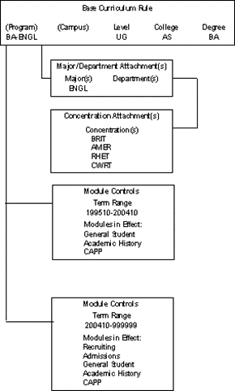
The following procedure explains how to create multiple module control records. The same principles apply to all of the windows of the Curriculum Rules (SOACURR) form.
Procedure
How the ERP API uses curriculum settings
The settings on the SOACTRL page and on the SOACURR page for each curriculum rule includes whether changes are allowed for a term in which the student is registered and whether it is possible to transfer a student into the curriculum using the Change Curriculum solution in Experience.
The Change Curriculum solution uses the learner-concurrent-curricula API to fetch a student's active, current, learner curricula to display on the Change Curriculum page, and the learner-concurrent-curricula-updates API to make changes to a particular curriculum.
The learner-concurrent-curricula-updates API uses the settings from SOACTRL and SOACURR as follows:
On the SOACTRL page, the section consists of the Allow learner curricula changes in registration term check box, which is cleared by default. The learner-concurrent-curricula-updates API uses the value in this check box; and the Change Curriculum solution indirectly uses the value in this check box simply because the solution uses the API.
- If the Allow learner curricula changes in registration term check box is cleared, then the learner-concurrent-curricula-updates API cannot change learner curricula for a student for a term in which the student is registered.
This means that an advisor would need to make student curriculum changes for a current or future term that is later than the latest term in which that student is registered.
- If the Allow learner curricula changes in registration term check box is selected, then the learner-concurrent-curricula-updates API can change the learner curricula for a student for a term in which the student is registered, depending on the settings of the controls on the SOACURR page.
The Allow change in registration term indicator on SOACURR can be set for each curriculum rule, and is cleared by default. The learner-concurrent-curricula-updates API uses the value in the indicator, and the Change Curriculum solution indirectly uses the indicator simply because the solution uses the API.
- If the Allow change in registration term check box is cleared for a curriculum rule, then the learner-concurrent-curricula-updates API cannot change a student’s learner curriculum for this curriculum rule for a term in which the student is registered, even if the Allow learner curricula changes in registration term check box is selected on the SOACTRL page.
This means that for a student in that particular curriculum, an advisor may need to make the student curriculum changes for a current or future term that is later than the latest term in which that student is registered.
- If the Allow change in registration term check box is selected for a curriculum rule, then the learner-concurrent-curricula-updates API can change a student’s learner curriculum for this curriculum rule for a term in which the student is registered, but only if the Allow learner curricula changes in registration term check box is selected on the SOACTRL page.
The Allow transfer in check box on SOACURR can be set for each curriculum rule, and is cleared by default. The learner-concurrent-curricula-updates API uses the value in the check box and the Change Curriculum solution indirectly uses the value in the check box simply because the solution uses the API.
- If the Allow transfer in check box is cleared, then the learner-concurrent-curricula-updates API cannot make curriculum changes to move the students into this curriculum.
This means that an advisor cannot use the Change Curriculum solution to move a student into a curriculum that has the Allow transfer in check box cleared on SOACURR. It typically means that the advisor should advise the student to follow institutional admissions processes to move to that curriculum; however, the setting of the Allow transfer in check box has no impact on any process, API or page other than the learner-concurrent-curricula-updates API, and therefore the Change Curriculum solution.
- If the Allow transfer in check box is selected, then the learner-concurrent-curricula-updates API can make curriculum changes to move the students into this curriculum.
New process control
The Change Curriculum solution uses only the UPDATECURRICULA process in Experience. Banner Faculty and Advisor Self-Service do not use this process. A user must be an active advisor on SIAINST to use the Change Curriculum feature.
Institutions can restrict advisors to only be able to change data for their own advisees by selecting the Relationship indicator for the UPDATECURRICULA process on the SOAFACS page.
- Make curriculum changes that comply with curriculum rules and with the controls for changing curricula within a registered term and being able to transfer students into a curriculum.
- Change a student’s curriculum if the advisor is an active advisor, effective for the current term of the student’s active, current learner curriculum. If the change is being made to be effective for a new term, the advisor’s active status must be effective for that new term.
If the Relationship indicator is selected on the SOAFACS page for the UPDATECURRICULA process, then the advisor must also have an active advising relationship with the student, effective for the current term of the student’s active, current learner curriculum and for the term for which the curriculum change is made.
An active advisor who has the Override Process Security indicator checked on the SIAINST page will be able to update curricula for any student, even when the Relationship indicator is selected on the SOAFACS page for the UPDATECURRICULA process, as long as that advisor’s record on SIAINST is effective for the current term of the student’s active, current learner curriculum and for the term for which the curriculum change is made.
Create UPDATECURRICULA record in STVPROC
You must create the UPDATECURRICULA records in Process Control Code Validation (STVPROC) page in Banner.
Procedure
Create UPDATECURRICULA record in SOAFACS
You must create the UPDATECURRICULA records in Faculty/Advisor Process Rules (SOAFACS) page in Banner.
Procedure
Set up CAPP
You can set up CAPP either top-down (programs first, then areas, and finally, if appropriate,groups) or bottom-up (groups first [if appropriate], then areas, and finally programs).
If you are setting up CAPP for the first time, it is recommended that you begin with one of your simpler programs. Define it, and then test it thoroughly to make sure you understand how CAPP works. This will help ensure a smooth transition to CAPP.
To help those new to CAPP, the Set up a sample area and program presents all the steps for creating a sample area and program in a bottom-up sequence, and then running and reviewing a compliance request.
Define programs
When you begin to build a program, you must start by defining program rules on the ProgramDefinitions Rules (SMAPRLE) form. Then you define the program requirements on the Program Requirements (SMAPROG) form.
Requirements can be defined at the program, area, group, or detail level. A requirement placed at a higher level always controls everything below it. You can define a more restrictive rule at a lower level, but never a less restrictive at a lower level. An example is minimum grade.
Example
Let’s say that you require a minimum program GPA of 2.00 (C) and do not want any course with a grade lower than a D to fulfill a requirement. However, you want to calculate a major GPA that includes any failed major courses. It is appropriate to put the 2.00 minimum program GPA at the program level, but do not define the minimum course grade of D at the program level. If you place the minimum D grade restriction at the program level, a failed course will never be considered by the program at all. Instead, place the minimum D grade restriction on the areas, groups, or individual detail requirements to which it should apply.
Define program rules
Use the Program Definitions Rules (SMAPRLE) form to define program rules, which are used in CAPP and in other modules in the Student System. Details in the program rule tell the rest of the system for whom the program is intended and provide specific processing information.
Procedure
Build program requirements from scratch
Learn how to build a program's requirements "from scratch," where you need to define everything.
About this task
You would typically use this procedure for the first program you define when you begin to implement CAPP and for programs that have nothing in common with other programs.
When your first program is defined, you can either copy it and change specific details (as explained in (as explained in Copy a program's requirements to another program) or create a new program and copy parts of an existing one (as explained in Copy part of a program's details to another program).
In general, you can enter detail requirements in any order. The following procedure presents them in the order they appear on the Options menu. If you try to enter information in a window that is dependent on information being entered elsewhere first, the system displays a message.
Procedure
Attach areas to programs
When areas have been defined they can be attached to programs. Indeed, for captive programs, all areas that are to be examined when performing compliance for a program must be attached.
About this task
There are three ways that an area can be used by compliance.
- In a captive program, all areas must be attached and the requirements of every attached area must be fulfilled for the program's requirements to be satisfied.
- In a non-captive program, you can attach areas if you want a greater degree of control over priorities and reuse than provided by the default values on the area(s). In a non-captive program, attached areas where the qualifiers do not match a person's characteristics are discarded and the requirements of a discarded area do not need to be fulfilled.
- In a non-captive program, any areas that are designated as dynamic in the area library can be selected for processing if their qualifiers match the person's characteristics.
Procedure
Define qualifier criteria for dynamic compliance
If a program is non-captive you can specify criteria for area qualifiers to be used for dynamic compliance. See Dynamic compliance for more information about dynamic compliance and area qualifiers.
Procedure
Copy a program's requirements to another program
Learn how to copy a program's requirements to another program.
About this task
If a new program being defined has many requirements that are the same as those in a program that has already been defined, you can copy the existing program's requirements to the new program, then change the details that are different. The program cannot have any requirements defined for it or else this option cannot be performed.
(If desired, you can also copy just the requirements in an individual window. This procedure is covered in Copy part of a program's details to another program.)
Procedure
Copy part of a program’s details to another program
Each window on the Program Requirements (SMAPROG) form allows you to copy the details associated with that window from one program to another. The window cannot have any details defined for it or else this option cannot be performed.
Procedure
Copy a program’s requirements to another term
A program's information might need to be changed over time. For example, you might require a minimum of 124 credits for a program at one point in time, but add an additional requirement so that the program requires at least 127 credits from that point in time on.
CAPP allows you to maintain the program's information for specific term ranges. When you perform compliance, the catalog term specified for the compliance request determines which set of requirements are used.
You can copy all requirements from one term to the next, and then change the necessary details, or you can copy just the requirements in an individual window.
Copy all of a program's requirements from one term to another
Learn how to copy all of a program’s requirements from one term to another.
Procedure
Copy program requirements in a specific window
Learn how to copy program requirements in a specific window.
Procedure
Make a program inactive
When all students in a program/term range combination have finished (or left) the program, you might want to make the program inactive.
Procedure
Define areas
An area is a subset of requirements within a program and is the connection between the program and the program's course/attribute detail requirements. You define an area for each major component of a program's requirements, for example, general education requirements, major requirements, and required electives.
When defining areas, you can also define qualifiers, which are used to specify characteristics the system uses to determine to which student the area applies. Qualifiers are used for dynamic compliance and can only be used for non-captive programs. See Dynamic Compliance for a complete discussion of qualifiers for dynamic compliance.
Add areas to the area library
Use the Area Library (SMAALIB) form to add an area to the area library for use in CAPP and to define the area’s qualifiers.
About this task
Procedure
Define area qualifiers
Use the Area Library Qualifiers window of the Area Library (SMAALIB) form to define qualifiers to be used with dynamic compliance.
About this task
You can define any of the following qualifiers:
- Campus
- College
- Degree
- Department
- Major
- Concentration
- Minor
- Student attribute
If you enter only one code in a qualifier field, the item associated with that code (for example,a degree) is included in the area definition.
You can define multiple qualifiers by entering FEW (for a set of inclusions) or ALL (for a set of exclusions) in the applicable field, then going to the Area XXX Codes to Include/Exclude window (where XXX represents the type of qualifier to define the set.
If a set of qualifiers has been defined, an asterisk (*) is displayed next to the value in the field.
Procedure
Copy area qualifiers to another term
Learn how to copy area qualifiers to another term.
About this task
An area's qualifiers might need to be changed over time.
For example, from Fall 1975 through Summer 2003, students in the College of Arts and Sciences and the College of Business had the same set of General Education requirements.
As such, the General Requirements block would have had the College qualifier defined to include the Arts and Sciences and Business college codes. However, as of Fall 2003, students in the College of Business will need to satisfy a different set of General Education Requirements.
Thus,the existing set of qualifiers for the General Education Requirements block will need a new set of qualifiers that includes only the Arts and Science college code, and a completely new area would be created for the College of Business General Education requirements with an appropriate set of qualifiers to ensure that it is selected for only Business students.
Procedure
Build area requirements from scratch
Learn how to build an area's requirements "from scratch," where you need to define everything.
About this task
You would typically use this procedure for the first area you define when you begin to implement CAPP and for areas that have nothing in common with other areas.
When your first area is defined, you can either copy it and change specific details (as explained in Copy an area's requirements to another area) or create a new area and copy parts of an existing one (as explained in Copy part of an area's details to another area).
In general, you can enter detail requirements in any order. The following procedure presents them in the order they appear on the Options menu. If you try to enter information in a window that is dependent on information being entered elsewhere first, the system displays a message.
Procedure
Attach courses or attributes to areas
You can attach specific courses, course attributes, and student attributes to areas.
About this task
If desired, you can apply set and subset values to a course/attribute attachment to take advantage of CAPP’s capability for establishing relationships between records using “and” and “or” conditions. You can also use set and subset values to specify the order in which CAPP evaluates detail line requirements. See Sets and subsets for more information about sets and subsets.
You can also define rules for a course/attribute attachment. See Rules for more information about rules.
Procedure
Attach groups to areas
If you are using groups, when you have defined them, they can be attached to areas.
About this task
If desired, you can apply set and subset values to a group attachment to take advantage of CAPP's capability for establishing relationships between records using "and" and "or" conditions. You can also use set and subset values to specify the order in which CAPP evaluates attached groups. See Sets and subsets for more information about sets and subsets.
You can also define rules for a group attachment. See Rules for more information about rules.
Procedure
Copy an area's requirements to another area
Learn how to copy an area's requirements to another area.
About this task
If a new area being defined has many requirements that are the same as those in an area that has already been defined, you can copy the existing area's requirements to the new area, then change the details that are different. The new area cannot have any requirements defined for it or else this option cannot be performed.
If desired, you can also copy just the requirements in an individual window. This procedure is covered in Copy part of an area's details to another area of this chapter.
Procedure
Copy part of an area's details to another area
Learn how to copy part of an area's details to another area.
About this task
Each window on the Area Requirements (SMAAREA) form allows you to copy the details associated with that window from one area to another. The window cannot have any details defined for it or else this option cannot be performed.
Procedure
Copy an area’s details to a new term range
An area's information might need to be changed over time. For example, you might require a minimum of 24 credits for an area at one point in time, but add an additional requirement so that the area requires at least 30 credits from that point in time on.
CAPP allows you to maintain the area's information for specific term ranges. When you perform compliance, the catalog term specified for the compliance request determines which set of requirements are used.
You can copy area details from one term range to a new one, and then change the necessary details, or you can end the details in an individual window as of a certain term.
Copy an area's general requirements from one term to another
Learn how to copy an area's general requirements from one term to another.
Procedure
Copy area details in any other window
Learn how to copy area details in any other window.
Procedure
Change the type of area attachments
Learn how to change the type of area attachments.
About this task
Use the following procedure to change the type of details attached to the area the from one type to the other (for example, if you want to change from course/attribute attachments to group attachments).
Procedure
Make an area inactive
When all students in an area/term range combination have finished (or left) the program associated with the area, you might want to make the area inactive.
Procedure
Implement area prerequisite processing
Area prerequisite processing is an optional feature that provides added flexibility for defining course prerequisites and for displaying more details related to a student’s failure to meet prerequisite requirements.
About this task
Area prerequisite processing can be set up on a section-by-section basis.
Procedure
Define groups
A group is a subset of requirements within an area. Groups are not a required component of an area; whether or not you use them depends on the requirements of each area.
You can attach either groups or individual course/attribute detail requirements to an area. You use groups when there is a clearly definable subset of course/attribute requirements within an area, for example, a set of requirements for which you want to define specific restrictions.
When you evaluate your overall program's requirements, groups are usually readily identifiable. For example, within an area that defines the requirements for a major, you might have certain core courses that are subject to tighter grade and residency restrictions than those elective courses that apply to the major. As such, you might want to use one group for the major's core courses and another group for the major's elective courses.
Add groups to the group library
Use the Group Library (SMAGLIB) form to add a group to the group library for use in CAPP.
About this task
Procedure
Build group requirements from scratch
Learn how to build a group’s requirements “from scratch,” where you need to define everything. You would typically use this procedure for the first group you define when you begin to implement CAPP and for groups that have nothing in common with other groups.
About this task
When your first group is defined, you can either copy it and change specific details (as explained in Copy a group's requirements to another group) or create a new group and copy parts of an existing one (as explained in Copy part of a group’s details to another group).
In general, you can enter detail requirements in any order. The following procedure presents them in the order they appear on the Options menu. If you try to enter information in a window that is dependent on information being entered elsewhere first, the system displays a message.
Procedure
Attach courses and attributes to groups
You can attach specific courses, course attributes, and student attributes to groups.
About this task
If desired, you can apply set and subset values to a course/attribute attachment to take advantage of CAPP’s capability for establishing relationships between records using “and” and “or” conditions. You can also use set and subset values to specify the order in which CAPP evaluates records. See Sets and subsets for more information about sets and subsets.
You can also define rules for a course/attribute attachment. See Rules for more information about rules.
Procedure
Copy a group's requirements to another group
Learn how to copy a group’s requirements to another group.
About this task
If a new group being defined has many requirements that are the same as those in a group that has already been defined, you can copy the existing group’s requirements to the new group, then change the details that are different. The new group cannot have any requirements defined for it or else this option cannot be performed.
If desired, you can also copy just the requirements in an individual window. This procedure is covered in Copy part of a group's details to another program.
Procedure
Copy part of a group’s details to another group
Each window on the Group Requirements (SMAGROP) form allows you to copy the details associated with that window from one group to another. The window cannot have any details defined for it or else this option cannot be performed.
Procedure
Copy a group's details to another term
A group's details might need to be changed over time. For example, you might require a minimum of 12 credits for a group at one point in time, but add an additional requirement so that the group requires at least 15 credits from that point in time on.
CAPP allows you to maintain the group's information for specific term ranges. When you perform compliance, the catalog term specified for the compliance request determines which set of requirements are used.
You can copy all details from one term to the next, and then change the necessary details, or you can copy just the details in an individual window.
Copy a group’s general requirements from one term to another
Learn how to copy a group’s general requirements from one term to another.
Procedure
Copy group details in any other window
Learn how to copy group details in any other window.
Procedure
Make a group inactive
When all students whose program uses a group/term range combination have finished (or left) the program associated with the group, you might want to make the group inactive.
Procedure
Compliance requests
Introduction to compliance process
Compliance processing compares the requirements for a student’s goal against the student’s course work (complete, transfer, in-progress, and planned).
Compliance processing uses a compliance request record, which can be created using the Compliance Request Management (SMARQCM) form, to give it basic instructions and parameters; it then collects the program’s requirements and the student’s course work, non-course requirements, student attributes, and student adjustments, and compares the student’s achievements against the requirements.
Student achievements are collected from the following sources.
- Courses/attributes earned by the student at the institution are collected from the student’s academic history.
- Courses/attributes earned by the student at other institutions are collected from the student’s awarded transfer work. (Transfer work still in transfer articulation is not considered by compliance evaluations).
- Courses/attributes in which the student is currently enrolled are collected from the student’s registrations. Only courses that will eventually roll to academic history are collected. (Courses that are not gradable or that would exceed the repeat limit [defined in the catalog] for a course are not collected.)
- Courses/attributes that a student plans to take are collected from the planned courses associated with the specific compliance request.
- Non-course achievements are collected from the student’s non-courses in academic history.
- Student attributes are collected from data entered in the Additional Student Information (SGASADD) form. Only student attributes in effect as of the evaluation term for the compliance request are considered by compliance. Student attributes with an effective term range that ends before a compliance request's evaluation term are not considered when that compliance request is processed.
Course attributes can be collected from a number of sources.
- Attributes associated with institutional course work come from those attached to sections that have been graded and rolled to academic history. The compliance process first checks to see if there are any attributes for the course specific to the student. If there are, the system uses the student-specific set of attributes. If there are no student-specific attributes, then the set of attributes associated with the section in academic history are used. The compliance process does not check schedule data for any courses that are already in academic history.
- Attributes associated with transfer courses are taken from those associated with the institutional equivalent courses articulated from the transfer work. Attributes associated with transfer work still in transfer articulation are not considered by the compliance process.
- Attributes associated with in-progress courses (those not yet rolled to academic history) are taken from data maintained for the section in the schedule module. The compliance process does not look to catalog data for any attributes.
- Planned attributes are taken from data entered in the planned courses/attributes window of SMARQCM and are associated only with that specific compliance request.
Compliance processing compares the program’s requirements with the student’s courses and attributes from any of the previously mentioned sources.
After the compliance process has been run for a request, the request cannot be resubmitted for processing; instead, a new request must be generated.
Compliance results can be displayed using the following forms.
- The Compliance Results Inquiry (SMICRLT) form displays overall results and acts as a guide through the other output forms. You can access SMICRLT directly from the main menu, or you can select Display Compliance Results from the Options menu on the Compliance Request Activity (SMACACT) form or the Compliance Request Management (SMARQCM) form.
- The Program Output Inquiry (SMIPOUT) form displays results of the compliance process for the program's requirements.
- The Area Output Inquiry (SMIAOUT) form displays results of the compliance process for each area used by the program.
- The Group Output Inquiry (SMIGOUT) form displays results of the compliance process for the groups attached to each area used by the program.
Compliance results can be printed using the Compliance Hardcopy Output Report (SMRCRLT). The level of detail that appears on this report is determined by the values in the Print Indicator field on the Area Library (SMAALIB) form and Group Library (SMAGLIB) form. Choices are:
- Print Everything
- Print Only Gen Reqs
- Print Gen Reqs & Text
- Print Text Only
- Print Nothing
The library print indicators are used with the rules for output defined on the Compliance Print Type Rules (SMACPRT) form. The print type rules control what area information is printed, subject to the additional control defined in the area library. For example, if the print type rules say to print area text, but the area library says to print nothing, no area text is printed for the specific area.
Compliance requests
Compliance requests are used to initiate the compliance process for the system to evaluate the progress of a student's goal.
It is in the compliance request that you specify certain parameters such as the program to be evaluated, the sort order of the student's courses, and whether in-progress courses should be considered.
Review compliance rules
You can review compliance rules that are set up at your institution (for rule within a rule information for areas and groups) by running the Compliance Rule Report (SMRRLST). You can then adjust your rules as needed.
Compliance process order
The compliance process considers requirements in the following order.
- Areas are processed in order of priority. Within areas, groups are processed in alphabetical order within set/subset combinations. In the absence of sets and subsets, groups are processed in alphabetical order.
- Detail course attachments are processed as follows.
- Null sets and subsets without rules
- Null sets and subsets with rules
- Sets sorted alphabetically
- Subsets sorted numerically
As each detail course attachment requirement is processed, the course list and attribute list are searched in the order requested.
Entire courses and attributes that have not been used before are used first. Unused portions (splits) of courses and attributes are used next. If the requirement is still not satisfied or the maximum allowable credits/courses have not been applied to the requirement, processing continues, and an attempt is made to reuse any courses allowed, based on the reuse flags that have been set.
If a course’s credits cannot be used in their entirety due to a restriction or a maximum number of allowable credits defined for the requirement having been applied to the requirement, then the course’s credits are “split”. The compliance process applies the number of credits up to the limit imposed by a restriction or by a maximum, and the remaining credits are considered available for usage on another requirement.
Second-pass and best-fit process
If necessary, when the system has completed a first pass of an area's requirements to identify all those that have been satisfied, the system performs a second pass to determine which outstanding requirements connected by an "or" condition are closest to being satisfied.
Refer to Sets and subsets for a complete discussion of "and" and "or" conditions and how they work with sets and subsets.
During the first pass, when set of requirements with "or" conditions is found, each possible condition is processed one at a time in sequence. As soon as the first "or" condition is met, the fulfilling events (such as courses, attributes, tests) are applied to the requirement. Processing then continues with the next requirement.
If no "or" condition within a set can be fulfilled, no events are used against the requirement. The events are all released and second-pass processing begins. During second-pass processing, best-fit logic is applied. Best-fit means that the events are applied against the "or" condition that will accumulate the highest number of credits.
The following is an example of best-fit processing.
In a single area or group, you have defined a requirement for 18 credits in any one foreign language. In each language, a student must take the 101-102 and 203-204 sequences, and the 306 course. French (FREN), German (GRMN), Latin (LATN), and Spanish (SPAN) are the available languages.
You can define this requirement using sets and subsets, as shown in the following table.
| Set | Subset | Subj | Crse Low | Crse High | Req Crses |
|---|---|---|---|---|---|
| A | 005 | FREN | 101 | 102 | 2 |
| A | 005 | FREN | 203 | 204 | 2 |
| A | 005 | FREN | 306 | 1 | |
| A | 010 | GRMN | 101 | 101 | 2 |
| A | 010 | GRMN | 203 | 204 | 2 |
| A | 010 | GRMN | 306 | 1 | |
| A | 015 | LATN | 101 | 101 | 2 |
| A | 015 | LATN | 203 | 204 | 2 |
| A | 015 | LATN | 306 | 1 | |
| A | 020 | SPAN | 101 | 101 | 2 |
| A | 020 | SPAN | 203 | 204 | 2 |
| A | 020 | SPAN | 306 | 1 |
Let's say a student has earned 3 credits in French, 15 credits in German, and 6 credits in Spanish. In this case, the language requirement cannot be satisfied by any single foreign language. Because the student has the greatest number of credits in German, the courses are applied toward the requirement for German coursework.
Events applied to "or" requirements during second-pass processing are flagged as potential, because their use may be different in a different compliance evaluation. The potential flag in the compliance output records does not control any other processing; it merely indicates that the flagged event has been used against an "or" requirement that has not been completely satisfied.
Hardcopy output
The results of the compliance process are written to output records, and the date of the evaluation is recorded in the compliance request to indicate that the compliance evaluation was performed for the request.
Hardcopy output (if requested) can also be produced during the compliance process. Different hardcopy output formats can be designed using the Compliance Print Type Rules (SMACPRT) form. Hardcopy output can be requested when the compliance request is initiated or at a later time. When a compliance request is submitted, compliance processing checks if the compliance date was set for the compliance request. If not, a compliance evaluation is performed. Compliance processing then checks if there are any outstanding hardcopy requests for the compliance request. If any exist, the hardcopy output is produced. Compliance processing performs both the compliance evaluation and produces any requested hardcopy output.
The following forms are used to manage compliance requests:
- The Compliance Request Management (SMARQCM) form is used to create and view compliance requests, create and view planned courses associated with the compliance request, create and view hardcopy output requests associated with the compliance request, and request processing of the compliance request and any associated output requests.
- The Compliance Request Activity (SMACACT) form displays a summary of existing compliance requests and allows output records to be purged when desired. It can also be used to perform queries on summary data about existing compliance requests.
Hardcopy output pages
The output document is composed of three logical pages. Each logical page can be composed of more than one physical page, depending on the output options selected.
- Logical page 1 includes summary information and program/area/group output of all items except course/attribute detail.
- Logical page 2 includes area/group course/attribute detail (including information about any rules in use for the detail).
- Logical page 3 includes unused courses, planned courses, courses in-progress, and rejected courses.
While these sections do not produce a document that is limited to one page in length, they do allow you to design different output formats to fit different needs. For example, for students and advisors, you might want to print only logical pages 1 and 2. As you review the options available on the Compliance Print Type Rules (SMACPRT) form, which is the form used for designing your output formats, and experiment with designing output, you will see how the combination of print options and different logical pages allow you to design appropriate output.
All of the logical pages have the following elements.
- The standard page header appears at the top of every physical page of the document. It includes the student’s name and ID, the compliance request number and compliance date, and the page number of the physical page within the document.
- Mailing information appears at the top of every logical page of the document, allowing logical pages to be used as stand-alone documents, if desired. The mailing information fits in a standard window envelope.
- Compliance summary information appears at the top of every logical page of the document,allowing logical pages to be used as stand-alone documents, if desired. The specific fields of compliance summary information to be printed can be selected using SMACPRT.
Logical page 1 contains "running two-column information" that includes:
- Compliance curriculum and curriculum source information
- Miscellaneous graduation information
- Text and restrictions for program, area, and group requirements
- Courses that satisfy area or group requirements.
Logical page 2 contains area and group text and course/attribute detail attachments, including attachment rules. The order in which information is printed is:
- Title of an area or group
- Brief summary (credits and/our courses required) from the area or group general requirements
- Area/group text
- Actual course/attribute detail attachments and rules.
Logical page 3 contains "running two-column information" that includes:
- In-progress courses
- Planned courses
- Rejected courses
- Unused courses
- Messages and disclaimers
Batch compliance process
Compliance requests can be created and processed in batch using the Batch Compliance Process (SMRBCMP) form.
The Batch Compliance Process provides several options for requesting and producing compliance output. Batch compliance processing (also called "batch compliance") can do the following.
- Run the compliance process for outstanding requests, and produce any hardcopy output associated with processed requests.
- Produce hardcopy output requests that have been requested online but have not yet been produced. If the compliance process has not yet been run for a request with outstanding output, the compliance process will be performed first.
This option allows you to print a group of individually-requested hardcopy output documents at the same time, rather than having them produced and sent to the printer one at a time using the Compliance Request Management (SMARQCM) form. Only hardcopy output requests that are flagged not to print immediately will be produced by runs of this type.
- Create new compliance and hardcopy output requests for a group of students, run the compliance process, and print requested output for the new records.
This option allows you to run the compliance process and print hardcopy output for a group of students contained in a population selection. It can be used, for example, at the end of a term to produce compliance output for all registered students after courses have been graded and rolled to academic history, or just before preregistration to provide up-to-date compliance evaluations for advising purposes.
Whether compliance requests and hardcopy output requests are created online or in batch, or the requests are processed by immediate submission or in batch, compliance evaluation results can be viewed in the compliance results forms and the hardcopy output produced is the same.
When you specify Compliances (C) for the Run Mode parameter, the Batch Compliance Process performs a compliance evaluation for any outstanding compliance request records where the Compliance Date field on SMARQCM is blank. It also produces any outstanding hardcopy output associated with compliance requests for which the following conditions apply:
- Print date in the hardcopy output record is null
- Print Immediately check box in the Hardcopy Request window of SMARQCM) for the hardcopy output request is not selected
- Value in the Printer field (in the Hardcopy Request window of SMARQCM) for the hardcopy output request matches the Printer ID parameter
- Value in the ComplianceType field (in the Hardcopy Request window of SMARQCM) for the hardcopy output request matches the Compliance Print Type parameter
The batch compliance process does not create any new compliance requests or hardcopy output requests when you select the Compliances run mode. Only outstanding compliance and hardcopy output requests are processed.
When you specify Hardcopy (H) for the Run Mode parameter, the Batch Compliance Process produces any hardcopy output where:
- Print date in the hardcopy output record is null
- Print Immediately check box (in the Hardcopy Request window of SMARQCM) for the hardcopy output request is not selected
- Value in the Printer field (in the Hardcopy Request window of SMARQCM) for the hardcopy output request matches the Printer ID parameter
- Value in the Compliance Type field (in the Hardcopy Request window of SMARQCM) for the hardcopy output request matches the Compliance Print Type parameter
The batch compliance process does not create any new hardcopy output requests when you select the Hardcopy run mode. Only outstanding hardcopy output requests are processed. (If the compliance evaluation has not been performed, the evaluation will be performed before the hardcopy output is produced.)
When you specify Population (P) for the Run Mode parameter, the Batch Compliance Process creates compliance requests based on the Curriculum Source parameter. The curriculum source can be any of the following:
- Recruiting record (R)
- Admissions application record (A)
- Student record (S)
- Degree record (D)
The batch compliance process selects the appropriate curriculum source record using the Process Term parameter and attempts to create a compliance request record based on the curriculum information in the source record. The values entered in the compliance request record are the same as those used when the curriculum data are copied from recruiting, admissions, general student, or academic history into a request record using SMARQCM.
Hardcopy output requests can also be created, based on the values in the following parameters:
- Produce Hardcopy for Population
- Compliance Print Type
- Send to Advisor
- If you enter Y, the student's advisor assignments in effect for the Process Term parameter are selected).
- If you enter N, the student’s name is used as the "issued-to" name in the hardcopy output request. If the student also has an active address based on the values entered in the Address Hierarchy and Address Selection Date parameters, that address is inserted in the hardcopy output request.
- Primary Advisor Only
- If you enter Y, only the student’s primary advisor in effect for the process term is selected.
- If you enter N, all advisors in effect for the process term for which the Advisor Type parameter matches the advisor type in the advisor assignment are selected. A hardcopy output request is created for each selected advisor, and the advisor’s name is used as the "issued-to" name.
- AdvisorType
Because compliance requests created in batch do not allow user intervention other than the entry of parameter values, you should keep the following points in mind when you specify batch compliance parameters.
- When extracting records using Population Selection, carefully consider the relationships between the criteria you use. For example, you will get unpredictable results (or no results at all) if you extract a population of all students registered for a specific term and then specify Recruiting as your curriculum source.Warning: If a request record cannot be created for a student in the population selection based on the curriculum source selected, no compliance evaluation will be performed and the message No compliance request made will be displayed in the detail section of the Batch Compliance (SMRBCMP) report.
- The curriculum source record selected for a student must include all data required to build a valid compliance request. If you plan to use batch compliance, you must ensure that valid values have been entered for the catalog term and program in the records you plan to use as curriculum source records; if they are not, compliance requests will not be created and compliance evaluations will not be performed.Warning: If a source record exists for a student in the population and the term specified in the parameters, but the catalog term and program are not present in the source record, no compliance request will be created, no results will be produced, and the message No compliance request made will be displayed in the detail section of the SMRBCMP report.
- The Process Term parameter is used to select the correct curriculum source records and is used as the evaluation term in the compliance request records created by the Batch Compliance Process.
- If Recruiting records are specified as the curriculum source, a recruiting record must exist where the term code equals the value entered in the Process Term parameter. If multiple recruiting records exist for the term code specified in the Process Term parameter, multiple compliance requests are created and processed.
- If Admissions records are specified as the curriculum source, an admissions record must exist where the entry term code equals the value entered in the Process Term parameter. If multiple admissions records exist with an entry term code equal to the value entered in the Process Term parameter, multiple compliance requests will be created and processed.Note: If the program code entered in the secondary curriculum window of an admissions record is the same as the one in the primary curriculum window, the secondary curriculum data is treated as an extension of the primary curriculum. However, if the program code in the secondary curriculum is different from the one in the primary curriculum window, the secondary curriculum data is ignored. Therefore, if a compliance evaluation is desired for the secondary curriculum program, it must be requested manually through SMARQCM.
- If Student records are specified as the curriculum source, a student record must exist where the effective term code is less than or equal to the value entered in the Process Term parameter.Note: If the program code entered in the secondary curriculum window of a general student record is the same as the one in the primary curriculum window, the secondary curriculum data is treated as an extension of the primary curriculum. However, if the program code in the secondary curriculum is different from the one in the primary curriculum window, the secondary curriculum data is ignored. Therefore, if a compliance evaluation is desired for the secondary curriculum program, it must be requested manually through SMARQCM.
- If Degree records are specified as the curriculum source, a degree record must exist where the graduation term code equals the value entered in the Process Term parameter, and the degree status code value equals (one of) the value(s) entered in the Degree Status Code parameter. If multiple degree records that meet the Process Term and Degree Status Code parameters exist, then multiple compliance requests are created and processed.Warning: Unless the graduation term is populated in Degree records, batch compliance will not select degree records for processing.
Because the process term is also used as the compliance request evaluation term and cannot be set differently for different students, the results of batch compliance might be slightly different than compliance output requested online when the evaluation term can be specified for an individual. Because the evaluation term controls the evaluation of course year limits and the selection of equivalent courses, these are the two areas where differences may occur.
- To reduce the number of parameters required for batch compliance, some of the values used to create compliance requests are hard-coded. For the most part, the hard-coded values are the same as the values that default when a new compliance request record is created using SMARQCM.
One compliance parameter value that does not default on SMARQCM is the Originator Code. This compliance parameter is hard-coded in batch compliance processing. The value that defaults for the originator code during batch compliance processing is AUTO. Therefore, the value AUTO (with any description you desire) must exist in the Originator Code Validation (STVORIG) form. (The value AUTO is also used in a number of other Banner processes to indicate that a record was created and updated automatically by a batch process.)
Warning: If the value AUTO does not exist on STVORIG, batch compliance will terminate unsuccessfully with the error ORA-02291: integrity constraint (SATURN.FK1_SMRRQCM_INV_STVORIG_CODE) violated - parent key not found. If this error occurs, add AUTO to STVORIG. - The following are the valid values for the Sort Order parameter.
- When Sort Order N(ame) is selected, hardcopy output produced by batch compliance is sorted by the value in the Issued To field in the Hardcopy Request window of SMARQCM. If the Send to Advisor parameter is Y, the issued-to name is the advisor’s name. If the Send to Advisor parameter is N, the issued-to name is the student’s name. Therefore, this one parameter can correctly sort requests so that they can be easily distributed either to students or to advisors.
- When Sort Order Z(ip, name) is selected, hardcopy output produced by batch compliance is sorted first by the ZIP/postal code in the hardcopy output request, then by the issued-to name. If the Send to Advisor parameter is Y, the issued-to name is the advisor’s name. If the Send to Advisor parameter is N, the issued-to name is the student’s name. Because advisor addresses are not inserted into hardcopy output request records, it would be inappropriate to select this sort order when the Send to Advisor parameter is Y. However, this sort order is appropriate if you are producing hardcopy output to mail to students.
- When Sort Order P(rogram, name) is selected, hardcopy output is sorted by the program code in the compliance request record for which hardcopy output is produced, then by the issued-to name. This sort option allows you to distribute hardcopy output by program. Because the issued-to name is also part of the sort order, this option produces output sorted first by program and then by name.
In most cases, the files created by batch compliance are not important to the end user. However, the smrbcmp_<oneup>.log file information required to continue processing in the event batch compliance processing terminates before completion. Batch compliance writes the session ID to the smrbcmp_<oneup>.log file to facilitate restart of a batch. To restart a batch, run the Batch Compliance Process, entering this number in the Session ID parameter. When a job is restarted, all other parameters are ignored.
Rejection reasons
When compliance is run, courses can be rejected for various reasons.
Here is a list of rejection reasons and descriptions used with SMRCMPL and SMRBCMP.
| Error Message | Description |
|---|---|
| Invalid Campus/Coll/Dept | The course does not meet the campus, college, or department requirement in the Course/Attribute Attachment block or the Course/ Attribute Exclusions block of the Area Requirements (SMAAREA) form or the Group Requirements (SMAGROP) form. |
| Outside Term Range | The course was taken outside of the must take in or after term and must take before term range in the Course/Attribute Attachment block or the Course/Attribute Exclusions block of the Area Requirements (SMAAREA) form or the Group Requirements (SMAGROP) form. |
| Exceeded Year Rule Limit | The year limit (also called year rule) requirement in the General Requirements or the Course/Attribute Attachment blocks of the Area Requirements (SMAAREA) form or the Group Requirements (SMAGROP) form or the General Requirements block of the Program Requirements (SMAPROG) form has been exceeded. |
| Outside Credits Per Crse Range | The course credits are outside the minimum credits per course and the maximum credits per course range in the Course/Attribute Attachment block of the Area Requirements (SMAAREA) form or the Group Requirements (SMAGROP) form. |
| Detail Min Grade Not Met | The minimum grade requirement in the Course/Attribute Attachment block of the Area Requirements (SMAAREA) form or the Group Requirements (SMAGROP) form has not been met. |
| Group Min Grade Not Met | The minimum course grade in the General Requirements block of the Group Requirements (SMAGROP) form has not been met. |
| Area Min Grade Not Met | The minimum course grade in the General Requirements block of the Area Requirements (SMAAREA) form has not been met. |
| Program Min Grade Not Met | The minimum course grade in the General Requirements block of the Program Requirements (SMAPROG) form has not been met. |
| Detail Addl. Level Not Met | The include level requirement in the Include/Exclude Course/Attribute Levels in Requirement block of the Area Requirements (SMAAREA) form or the Group Requirements (SMAGROP) form has not been met. |
| Group Addl. Level Not Met | The include level requirement in the Include/Exclude Course Levels block of the Group Requirements (SMAGROP) form has not been met. |
| Area Addl. Level Not Met | The include level requirement in the Include/Exclude Course Levels block of the Area Requirements (SMAAREA) form has not been met. |
| Program Addl. Level Not Met | The include level requirement in the Include/Exclude Course Levels block of the Program Requirements (SMAPROG) form has not been met. |
| Intentionally Excluded | The course is excluded in the Course/Attribute Exclusions block of the Area Requirements (SMAAREA) form or the Group Requirements (SMAGROP) form. |
| Invalid Course Level | The course level is excluded in the Include/Exclude Levels block of the Area Requirements (SMAAREA) form, the Group Requirements (SMAGROP) form, or the Program Requirements (SMAPROG) form. |
| Group Restricted Subj/Attr | The course or course attribute is restricted in the Restricted Subjects/ Attributes block of the Group Requirements (SMAGROP) form. |
| Area Restricted Subj/Attr | The course or course attribute is restricted in the Restricted Subjects/ Attributes block of the Area Requirements (SMAAREA) form. |
| Program Restricted Subj/Attr | The course or course attribute is restricted in the Restricted Subjects/ Attributes block of the Program Requirements (SMAPROG) form. |
| Group Restricted Grade | The course grade is restricted in the Group Restricted Grades block of the Group Requirements (SMAGROP) form. |
| Area Restricted Grade | The course grade is restricted in the Area Restricted Grades block of the Area Requirements (SMAAREA) form. |
| Program Restricted Grade | The course grade is restricted in the Program Restricted Grades block of the Program Requirements (SMAPROG) form. |
| Transfer Course Not Allowed | The use of transfer courses is not allowed in the Course/Attribute Attachment block of the Area Requirements (SMAAREA) form or the Group Requirements (SMAGROP) form. |
| Exceed Max Transfer Cred/Crse | The transfer credits or courses exceed the maximum allowed in the General Requirements block of the Program Requirements (SMAPROG) form,the Area Requirements (SMAAREA) form, or the Group Requirements (SMAGROP) form. |
| Exceed Max Non-Trad Cred/ Crse | The credits or courses with non-traditional grades exceed the maximum allowed in the General Requirements block of the Program Requirements (SMAPROG) form, the Area Requirements (SMAAREA) form, or the Group Requirements (SMAGROP) form. |
| Targeted to Diff Area/Group | The course is targeted to a different area or group on the Student Targets, Waivers, and Substitutions (SMASADJ) form. |
| TestScore Not Met (SMRCMPL only) |
The test score requirement in the Course/Attribute Attachment block of the Area Requirements (SMAAREA) form or the Group Requirements (SMAGROP) form has not been met. |
| Concurrency Not Met (SMRCMPL only) |
The concurrency requirement has not been met. |
| Repeated Course (SMRCMPL only) |
The course has been repeated. |
| Repeat Limit Exceeded (SMRCMPL only) |
The course repeat limit has been exceeded. |
| Prerequisite Not Met (SMRCMPL only) |
The course prerequisite has not been met. |
Compliance request procedures
The Compliance Request Management (SMARQCM) form can be used for the following.
- Add a new request for a compliance evaluation
- Define“planned courses” associated with the compliance request
- Create requests for hardcopy output
- Submit a request for processing
You select Submit for Processing on the Options menu to perform a compliance evaluation and produce hardcopy output.
When a compliance request has been processed, you can not make any changes to the compliance request itself, but you can create hardcopy output requests and submit them for processing. You can also process charges to the student’s account for compliance processing and printing hardcopy output.
Create compliance requests
You use the Compliance Request Management (SMARQCM) form to generate compliance requests.
About this task
Procedure
Copy information from one request to another
Copy a request with SMARQCM
You can use SMARQCM to copy a request.
Procedure
Copy a request with SMACACT
You can use SMACACT to copy a request.
Procedure
Results
Create hardcopy output requests
The Hardcopy Request window of the Compliance Request Management (SMARQCM) form is used to enter or display requests for printed compliance hardcopy output.
About this task
When a hardcopy request is entered and submitted, the compliance process generates the compliance evaluation for the request, if necessary, and then prints any requested output for the request. If the compliance evaluation was previously performed, submitting the request for processing output only produces the printed output.
Hardcopy output requests can be either printed immediately or saved for batch processing.
Procedure
Create charges for compliance requests
The Request Billing Information window of the Compliance Request Management (SMARQCM) form allows you to submit charges to Accounts Receivable to recoup costs associated with the compliance request. It can be used at any time.
About this task
The Request Billing Information window can be used to send authorized charges directly to a student's account in the Accounts Receivable module. The system logs the transactions to a cashiering session identified by the user ID displayed in the Authorized field.
When you create a charge using the Request Billing Information window, the transaction is sent to Accounts Receivable when the transaction is saved. Review of fees associated with compliance requests can be done using forms within the Accounts Receivable module.
Procedure
Create charges for hardcopy output
Use the Hardcopy Billing Information window of the Compliance Request Management (SMARQCM) form to create Accounts Receivable charges associated with a hardcopy request.
About this task
When you create a charge using the Hardcopy Billing Information window, the transaction is sent to Accounts Receivable when the transaction is saved. Review of fees associated with compliance requests can be done using forms within the Accounts Receivable module.
Procedure
Review compliance results online
Compliance results can be displayed online using the following forms.
- Compliance Results Inquiry (SMICRLT) form
- Program Output Inquiry (SMIPOUT) form
- Area Output Inquiry (SMIAOUT) form
- Group Output Inquiry (SMIGOUT) form
The compliance review forms generally provide more detail than can be accommodated in hardcopy output. They are also designed to support a "drill-down" review of compliance results. That is, they begin by showing you a summary of the results and then let you access more detail about each item.
Purge compliance requests
You use the Compliance Request Activity (SMACACT) form to purge compliance requests.You can purge the detail associated with a request or purge the entire request.
About this task
Procedure
Results
Use XML compliance output
You can create XML compliance output from baseline or in Self-Service.
The output can be customized to fit your institution’s needs. You can still run compliance as you have in the past, or you can use the XML output functionality. XML data is easily transformed into usable output.
XML output is available when compliance is run from the Compliance Request Management (SMARQCM) form or the Batch Compliance Process (SMRBCMP) in baseline and from the Degree Evaluation Results Report page (bwcksxml.report) in Banner Student Self-Service and Banner Faculty and Advisor Self-Service. The information that is displayed in the XML output is based on the rules set up on Compliance Print Type Rules (SMACPRT) form and is formatted by a style sheet.
The output is created by a single process so whether compliance is run from baseline or self-service, the results are consistent. The output is also complete and contains all available compliance information from the existing CAPP tables. This provides detailed data for the compliance output that can be easily transformed to the format of your choice. Two templates are delivered to assist with hardcopy and Web customization. Further customization assistance is available from the company.
XML output stored in table
When XML compliance output is created online (SMARQCM) or from batch processing (SMRBCMP), the data can be stored as an XMLTYPE column in the Compliance XML Output (SMRCXML) table.
The SMRCXML_XML column has a description of SYS.XMLTYPE. Output can also be written to the job submission directory as a file with the .xml suffix. The data can be transformed to display as various file types such as .html, .doc, .lis, .pdf, and so on, depending on the type of style sheet used. The table is populated by the smrcmjx.jar process when either single or batch compliance evaluations are created. The smrcmjx.jar process has properties that can be configured to determine whether the XML data is saved to the table for either single or batch compliance evaluations.
You can query on a data set from the table or extract elements using XML tags. This allows you to perform data mining, query for statistics, and produce new types of reporting. An XPath function can be used to extract data from nodes using string values. An existsNode function can be used to return true values if they exist. You can refer to an XPath Core Function Library for a complete list of functions.
When XML compliance output is created from Self-Service by a student or faculty member/advisor, it is not saved to the SMRCXML table. This allows students to run multiple “what if” scenarios and not take up database space. When XML compliance output is created from baseline using SMARQCM or SMRBCMP, the data is saved based on how the .jar file parameters are set.
Delivered style sheets
Two style sheets are delivered for use with XML output, one for baseline hardcopy output and one for Self-Service online output.
Both style sheets are XSL templates. The hardcopy template produces output in a text format, and the Web template produces output in an HTML format.
The style sheets are .xsl files that are used to control how the XML document is formatted. The default style sheet is the smrcrltlis.xsl file. This style sheet can be used with the baseline output file (smrcmjx.lis) and the Self-Service template file (smrcrlt.xsl) to create the HTML output.
You can use the default style sheet that is provided, or you can copy a style sheet and configure (customize) it to your preferences using a text file editor. (If you want to modify the existing style sheet to produce custom output, you should have a basic knowledge of HTML.) You can create and use multiple style sheets if you need to. You can modify colors, fonts, spacing, tables, labels and other formatting items. You can comment out text so it will not display on the output, instead of using the print rules to determine what is printed on the output.
You can turn the XML output into whatever file type you wish: .html, .pdf, .doc, .lis, .rtf, etc. However, components are not delivered to support the .pdf file type. Services are available through the company to implement the use of PDF files and help you customize your style sheets.
Customized style sheets
You can use the XPath Core Function Library to review the core functions available for customizing style sheets.
Here is a list of core functions by category for your reference.
- Node Set Functions
"Last()"Position()"Count(node-set)n://*[count(*) = 2]"Id(object)"Name()n://*[name()='person']"Text()"Node()
- Number Functions
"Sum()"Floor()"Ceiling()"Round()
- Boolean Functions
"True()"Not()"False()"Lang()
- String Functions
"Concat()"Starts-with()"Contains()"Substring-before()"Substring-after()"Substring()"String-length()"Normalize-space()"Translate()
Set up process properties
The smrcmjx.jar file process is used to manipulate the compliance XML document by calling a common database procedure that produces the XML.
This Java process allows you to customize configuration settings to control numerous settings for the XML process; such as whether the XML file is saved to the file system, whether the XML results are saved to the database table, whether you want to continue to produce the existing hardcopy output report created by the SMRCRLT process, and whether you want to produce new hardcopy output based upon the supplied hardcopy output template.
XML output in baseline
XML output can be generated when compliance is run from Banner Student baseline.
The hardcopy output processing uses a Java (.jar) file to include or exclude the old, basic output files or the current, customizable output files. You can run the old files, the current files, or both.
The old basic output files are:
- smrcmpl.lis
- smrcmpl.log
- smrcrlt.lis
- smrcrlt.log
The current customizable output files are:
- smrcmjx.xml
- smrcmjx.lis
- smrcmjx.log
All output is captured in the XML output when compliance is run from the Compliance Request Management (SMARQCM) form or the Batch Compliance Process (SMRBCMP).When compliance is run from SMARQCM, you need to enter a compliance print type code in the ComplianceType field, and then select (set the field to Y) the Print Immediately check box to produce XML output when the request is submitted.
XML output in Self-Service
XML compliance output is generated when compliance is run from Banner Student Self-Service or Banner Faculty and Advisor Self-Service, thereby creating the HTML output.
However, a copy of the XML output is not saved for future retrieval. Students can run their own unofficial compliance reports as often as they would like, to create what if analysis scenarios.
The Degree Evaluation Results Report (bwcksxml.report) is produced with all the compliance information on one scrollable page. This report page allows you to view complete information about the compliance request and customize the output using the delivered template or your own customized template. You can pare down the information that is displayed to suit your needs or determine what a student or faculty member should or should not see.
WebCAPP rules
TheWebCAPP Rules (SMAWCRL) form is used to select how compliance results are displayed in Self-Service.
- The Print Type field is used for the original WebCAPP processing or processing that has been modified at your institution. It is not used with XML compliance output processing.
- The Compliance Type field in the Evaluation Display section is required to create the XML output. You must select a compliance type for Web display of compliance text. This allows more information to be captured for the Web output.
You can build a print rule on the Compliance Print Type Rules (SMACPRT) form to display compliance detail in Self-Service as XML output. This compliance print type rule is used to control which sections of the HTML report are displayed.
Curriculum data for compliance request
The curriculum fields in the Compliance Curriculum and Additional Curriculum Information windows on SMARQCM are populated by the curriculum and field of study data from the Learner Curricula (SORLCUR) table and the Field of Study (SORLFOS) table.
This allows the CAPP compliance request to be populated with the primary or first secondary curriculum record from SORLCUR along with the program, first two majors, two minors, and six concentrations from SORLFOS. The curriculum data is used whether the request is created from SMARQCM, SMRBCMP, or in Self-Service. The compliance process pulls the curriculum data from the request and does not refer back to concurrent curriculum data.
Purge output data
The Compliance Purge Process (SMPCPRG) purges XML compliance output data from the SMRCXML table.
The Compliance Request Activity (SMACACT) form purges data from the SMRCXML table when records are marked for deletion.
Technical information
This section discusses some of the technical elements used with XML compliance output.
Sample SMRCXML table queries
The Compliance XML Output (SMRCXML) table is used to collect and store XML compliance output. Here are some sample queries you can perform against the SMRCXML table.
Length of XML
select dbms_lob.getlength(xmltype.getclobval(smrcxml_xml))
from
smrcxmlAreas from XML
select
smrcxml_pidm,
s.smrcxml_xml.extract('/SMRCRLT_XML/AREA/SMBAOGN_ROWSET/SMBAOGN_SET/
SMBAOGN_AREA/text()').getStringVal()
from smrcxml sStudents with grade of A from Used Course section
select
s.smrcxml_pidm
from
smrcxml s
where
s.smrcxml_xml.existsNode('/SMRCRLT_XML/AREA/DETAILS/DETAIL_REQUIREMENT/
DETAIL_REQUIREMENT_USED/SMRDOUS_ROWSET/SMRDOUS_SET[SMRDOUS_GRDE_CODE =
"A"]') = 1Students with grade of A for specific course from Used Course section
select
F_GETSPRIDENID(s.smrcxml_pidm)
from
smrcxml s
where
s.smrcxml_xml.existsNode('/SMRCRLT_XML/AREA/DETAILS/DETAIL_REQUIREMENT/
DETAIL_REQUIREMENT_USED/SMRDOUS_ROWSET/SMRDOUS_SET[SMRDOUS_GRDE_CODE =
"A" and SMRDOUS_SUBJ_CODE = "CXML" and SMRDOUS_CRSE_NUMB="2000"]') = 1Students with Grade of F from Unused Course section
select
F_GETSPRIDENID(s.smrcxml_pidm)
from
smrcxml s
where
s.smrcxml_xml.existsNode('/SMRCRLT_XML/SMRDOCN_ROWSET/
SMRDOCN_SET[SMRDOCN_GRDE_CODE = "F"]') = 1Students with grade of F for specific course from Unused Course section
select
F_GETSPRIDENID(s.smrcxml_pidm)
from
smrcxml s
where
s.smrcxml_xml.existsNode('/SMRCRLT_XML/SMRDOCN_ROWSET/
SMRDOCN_SET[SMRDOCN_GRDE_CODE = "F" and SMRDOCN_SUBJ_CODE = "CXML" and
SMRDOCN_CRSE_NUMB = "2000"]') = 1Female (or unknown gender) students with grade of F for specific course
SELECT F_GETSPRIDENID(s.smrcxml_pidm)
FROM smrcxml s, spbpers
WHERE s.smrcxml_xml.existsNode('/SMRCRLT_XML/SMRDOCN_ROWSET/SMRDOCN_SET[
SMRDOCN_GRDE_CODE = "F"
and SMRDOCN_SUBJ_CODE = "CXML"
and SMRDOCN_CRSE_NUMB = "2000"]') = 1
AND SPBPERS_PIDM = s.SMRCXML_PIDM
AND (SPBPERS_SEX = 'F' or SPBPERS_SEX is NULL);Male (or unknown gender) students that have not taken/used specific course
SELECT F_GETSPRIDENID(s.smrcxml_pidm)
FROM smrcxml s, spbpers
WHERE s.smrcxml_xml.existsNode('/SMRCRLT_XML/SMRDOCN_ROWSET/SMRDOCN_SET[
SMRDOCN_SUBJ_CODE = "CXML"
and SMRDOCN_CRSE_NUMB = "2000"]') <> 1
AND SPBPERS_PIDM = s.SMRCXML_PIDM
AND (SPBPERS_SEX = 'M' or SPBPERS_SEX is NULL);Compliance data items
These items are used with XML compliance output processing.
| Item | Description |
|---|---|
| smrcmjx.shl |
Shell files are delivered for your operating system (smrcmjx.shl, smrcmjx.pl, smrcmjx.com). These files are responsible for launching the Java process that creates the XML document. They are called from either the smrcmpl.shl file or the SMRBCMP process. Please be aware that the shell files contain code which has been commented out. This code can be used as an example for how to transform the XML document into another output format. These comments should be considered as examples only. They are not part of the supported code set. |
| smrcmjx.jar |
This process is used to produce the XML output from either a batch or single compliance evaluation. It also updates the SMRCMXL table, and creates the smrcmjx.lis file from the smrcrltlis.xsl template. The smrcmjx.jar process contains three properties files within the archived file. These files can be modified to change the processing outcome. The three properties files are:
You can extract these properties files from the archive by issuing the following command: jar-xvf smrcmjx.jar <property file name>
When changes have been applied to the new properties files and then saved, you can upload the changed files to the archived file by issuing the following command: jar-uvf smrcmjx.jar <property file name>
The properties files control numerous processing outcomes for the smrcmjx.jar process. The specific controls in each property file are documented, along with the results of the individual settings. |
| smrcrlt.sql | This package creates the XML output for a compliance evaluation. Both the Web page (bwcksxml.sql) and the Java process (smrcmjx.jar) call this procedure to render and return the XML in an XMLTYPE variable. The procedures contained in this package are used for assembling the XML results into an XML document that represents logical compliance evaluation processing flow. |
| smkxapi.sql | This package creates the database procedures that query the individual compliance tables and return the result sets in XML format. The smrcrlt.sql package performs numerous calls to this package to assemble the XML document in a logical order that is relevant to the compliance evaluation information. |
| smkmxml.sql | This package creates the database utility procedures that generate the XML output. The procedures contained within this package are also responsible for reading the WebCAPP style sheet (smrcrlt.xsl) from the file system to render the HTML WebCAPP output. |
Remove hyperlinks in text
Previously, you could use HTML tags to format the printed data in Text blocks on CAPP forms and so bypass WebCAPP rules.
You should no longer do this. Using HTML tags could cause the XML used for compliance to be malformed and prevent compliance from running.
Compliance reports and processes
Batch compliance process (SMRBCMP)
Compliance requests can be created and processed in batch using the Batch Compliance Process (SMRBCMP). The process calls the smrcmjx.jar Java process to produce XML compliance output.
Parameters for the process give instructions on the type of processing to be performed when Batch Compliance is run. When run in Population Selection mode, the parameters can be used to specify the source of the compliance curriculum and the intended recipient of the printed output.
Curriculum and field of study data is retrieved from the SORLCUR and SORLFOS tables for the two majors, two departments, two minors, six concentrations, level, degree, college, campus, catalog term, term, and curriculum rules.
| Parameters | Name | Required | Description | Values |
|---|---|---|---|---|
| Process Term | Yes | Used in report headings and as the selection term for source records, the evaluation term, and the student record/advisor term for created compliance requests. Validated against STVTERM. Single. | ||
| Run Mode | Yes |
Used to specify the type of processing to occur. Single. If run for a population selection (P), a population must be provided using the Application, Selection ID, Creator ID, and User ID parameters. Compliance requests and hardcopy output requests will be created for records in the population, a compliance evaluation will be performed,and the requested hardcopy output will be produced. If run for outstanding compliance requests (C), only outstanding compliance requests are evaluated, and any outstanding hardcopy output is produced. No new requests are created. If run for outstanding output only (H), outstanding hardcopy output requests will be produced. If the compliance process has not yet been performed for an outstanding hardcopy request, the compliance evaluation will also be performed. |
P - Use population selection C - Process outstanding compliance requests H - Produce outstanding output only |
|
| Application Code | No, unless Run Mode parameter is P |
Used to identify the application of the population when population selection processing is requested. Single. |
||
| Selection Identifier | No, unless Run Mode parameter is P |
Used to identify the selection ID of the population when population selection processing is requested. Single. |
||
| Creator ID | No, unless Run Mode parameter is P |
Used to identify the creator of the population when population selection processing is requested. Single. |
||
| User ID | No, unless Run Mode parameter is P |
Used to identify the user who created the population which will be used. Single. |
||
| Curriculum Source | No, unless Run Mode parameter is P | Used to specify the source of the curriculum data to be used when a compliance request is created during population selection processing. Single. When Recruiting (R) is selected, compliance request records are created for records in the population based on the information in the selected recruiting record. To be used as a curriculum source record, at least one recruiting record must exist for the Process Term parameter. If multiple recruiting records exist for the selected term, multiple compliance requests are created and evaluated. Compliance request records are not created for recruiting records that have been withdrawn. When Admissions (A) is selected, compliance request records will be created for people in the population based on the data in the selected admissions application record. To be used as a curriculum source record, the entry term of the admissions application record must equal the Process Term parameter. If multiple admissions application records exist for the selected term, multiple compliance requests will be created and evaluated. Compliance request records will not be created for admissions application records which have been withdrawn. When Student (S) is selected, compliance requests are created for records in the population based on the data in the selected general student record. To be used as a curriculum source record, an effective student record must exist for the Process Term parameter. When Degree (D) is selected, compliance requests are created for records in the population based on the data in selected academic history degree records. To be used as a curriculum source record, a record must exist where the Graduation Term equals the Process Term parameter and the Degree Status parameters equals one of the parameter Degree Status values. If multiple degree records exist that match the parameter Graduation Term and Degree Status, multiple compliance requests will be created and evaluated. |
R - Use recruiting records A - Use admission application records S - Use student records D - Use degree records |
|
| Degree Status | No,unless Curriculum Source parameter is D |
Used to indicate the degree status of degree records which will be used as curriculum course records. Multiple. Validated against STVDEGS. |
||
| Hardcopy for Population | Yes |
When P (population selection) is entered for the Run Mode parameter, this parameter controls whether hardcopy output requests will be created for created compliance requests. Single. |
N - Hardcopy output requests will not be produced Y - Hardcopy output requests will be created for the compliance print type specified in the Compliance Print Type parameter |
|
| Printer ID | No |
When C (outstanding compliance requests) or H (outstanding hardcopy requests) is entered for the Run Mode parameter, only hardcopy output requests where the destination printer entered for the hardcopy requests matches the parameter specified value will be produced. Single. If no value is entered for this parameter, outstanding hardcopy requests will be selected without regard to the printer contained in the request record. Validated against GTVPRNT. |
||
| Compliance Print Type | No |
When P (population selection) is entered for the Run Mode parameter, this parameter is used to Run Mode parameter, this parameter is used to Run Mode parameter, this parameter is used to Run Mode parameter, this parameter is used to specify the compliance print type to be produced if hardcopy output is requested for the population. When H (outstanding hardcopy requests) is entered for the Run Mode parameter, this parameter is used to specify the compliance print type that should be produced for the run. Single. Validated against STVCPRT You can use the percent sign (%) as a wild card value for your specification of compliance type, although you should do this only if the value entered for the Run Mode parameter is C (outstanding compliance evaluations) or H (outstanding hardcopy requests). |
||
| Send to Advisors | Yes |
Used only when the value entered for the Run Mode parameter is P (population selection). Indicates whether the hardcopy output should be produced for the person's advisor(s). Single. |
Y - Advisor name(s) will be set in the “Issued" information of the hardcopy output request so that the output can be forwarded to the appropriate advisor(s) N - Output will not be sent to the advisor(s) |
|
| Primary Advisor Only |
No, unless Send to Advisors parameter is Y |
Used only when the Send to Advisor parameter is Y. Indicates that hardcopy output should be produced for the person's primary advisor only. Single. |
Y - Primary advisor's name will be set in the “Issued" information of the hardcopy output request so that the output can be forwarded to N - Output will be sent to all advisor types specified in the Advisor Type(s) parameter (if there is more than one) |
|
| Advisor Type(s) |
No, unless Primary Advisor Only parameter is N |
Used only when the Send to Advisor parameter is Y. and Primary Advisor Only is N. Specifies which advisor type(s) the hardcopy output should be sent to. Multiple. Validated against STVADVR. |
||
| Address Hierarchy |
Yes, unless Send to Advisor parameter is Y |
Used only when the Send to Advisor parameter is N. Then, the student's name and address will be set in the "Issued" information of the Hardcopy Output request so that the hardcopy output can be mailed to the student. Multiple. Must be entered in standard address hierarchy format. Validated against STVATYP. |
||
| Address Selection Date | Yes |
Date on which the selected address type must be effective. Single. |
||
| Sort Order | Yes |
Order in which the records are to be sorted. Single. |
N - Issued-to Name Z - Zip, Issued-to Name P - Program, Issued-to Name |
|
| Session ID | No |
Session ID to be used in case the batch compliance process does not successfully complete processing for all records. The session ID entered for this parameter is printed in the Batch Compliance Report and the If this process is not successfully completed, enter the session ID to cause the process to begin where it stopped, so that requests that were successfully processed are not processed again. When running the batch compliance process through Job Submission, a number of parameters are required and this parameter is not required. However, if a session ID is entered for a restarted job, all other parameters are ignored and the job is restarted at its termination point. |
||
| Default Parameter Code | No |
Default type code to be used in compliance processing. Single. |
ONLINE BATCH WEB |
|
| Create SAP Data Y/N | No |
Enter Y to create data for the SHRSAPP table based on compliance results or N to not create data. The default is N. This value is inserted into the Person Collector Table (SPRCOLR) for use with SMRJOBS. Population selection must be set up on SMRBCMP and used for satisfactory academic progress. When only a few records are needed, you can create a manual population selection. |
Y - Create SAP data N - Do not create SAP data |
Report Sample — Batch compliance process (SMRBCMP)
Name: Student 1, Ashok Haridas Release 8.10 Page 1
ID: STUDAH01 Print Date: 05-OCT-2021
Request Number: 1 Print Type: OFFICIAL
Program: BA-ENGL - BA-ENGL
Level: UG - Undergraduate
Campus: M - Main
College: AS - College of Arts & Sciences
Degree: BA - Bachelor of Arts
Eval Term: 202107 - AH term 202107
Curr Srce : User-Entered
Curriculum Details: PROGRAM NON-COURSE REQUIREMENTS
Ctlg Term : 202107 - AH term 202107 Effective Term: 202107 Source: O
Major : ENGL - English Yr ----Status----
Met Code Description Lm Cd Date Actn
Curr Class: - --- ---- ------------------------------ -- -- ----------- ----
N ORAL Oral Examination
N PAPR Senior Paper
Printing Not met Text 1
Printing Not met Text 2
PROGRAM REQUIRED ATTRIBUTES
PROGRAM SUMMARY Effective Term: 202107 Source: O
NOT MET General Requirements Attribute ---Credits--- Courses
NOT MET Non-Course Requirements Met Crse Stdn Req Actl Req Actl Actn
NOT MET Required Attributes --- ---- ---- ------ ------ --- ---- ----
NOT MET Detail Requirements N A-1 3.00 0.00 AND 2 0
N 11T
PROGRAM GENERAL REQUIREMENTS
Effective Term: 202107 Source: O PROGRAM INCLUDED/EXCLUDED LEVELS
---Credits--- -Courses- Effective Term: 202107 Source: O
Met Req Actl Reqd Actl Min ---Credits--- Courses
--- ------ ------ --- --- I/E LV Grd Max Actl Max Actl Actn
Total Required: N 10.00 0.00 AND 3 0 --- -- --- ------ ------ --- --- ---- ----
Req Institution: N 4.00 0.00 AND 1 0 INC 01 A 3.00 0.00 OR 3 0
Req Inst Trad: N 2.00 0.00 AND 1 0 INC LW A 3.00 0.00 OR 3 0
Max Inst Non-Trad: 2.00 0.00 0
Max Transfer: 1.00 0.00 0 PROGRAM RESTRICTED SUBJECTS/ATTRIBUTES
Last Number Inst Req: Y 1.00 5.00 1 Effective Term: 202107 Source: O
..Out of Last Earned: Y 1.00 5.00 1 --Course--- Crse ---Credits--- -Courses-
Min Program GPA: N 3.00 0.00 Cmp Col Dept Subj Low High Attr Max Actl Max Actl Actn
Min GPA: N 10.00 4.00 --- --- ---- ---- ----- ----- ---- ------ ------ ---- ---- ----
Name: Student 1, Ashok Haridas Release 8.10 Page 2
ID: STUDAH01 Print Date: 05-OCT-2021
Request Number: 1 Print Type: OFFICIAL
JO 01 0001 022 M8 3.00 0.00 0 Cmp Col Dept Subj Low High Attr Max Actl Max Actl Actn
MA AS 2410 ACCT 101 4.00 0.00 0 --- --- ---- ---- ----- ----- ---- ------ ------ ---- ---- ----
JO 03 2000 SB01 101 102 3.00 0.00 0
PROGRAM RESTRICTED GRADES DM AS 0002 ACCT 100 101 0002 10.00 0.00 OR 4 0
Effective Term: 202107 Source: O
---Credits--- Courses Area: CAPPGRP CAPP Group
Grd Max Actl Max Actl Actn
--- ------ ------ --- ---- ---- AREA SUMMARY
A 30.00 0.00 0 NOT MET General Requirements
B 15.00 0.00 OR 4 0 NOT MET Group Requirements
AREA DETAIL AREA GENERAL REQUIREMENTS
Effective Term: 202107 Source: O
Area: CAPP CAPP ---Credits--- -Courses-
Area - CAPP Met Req Actl Reqd Actl
--- ------ ------ --- ---
AREA SUMMARY Total Required: N 120.00 0.00 0
NOT MET General Requirements Req Institution: N 100.00 0.00 0
NOT MET Course Requirements Req Inst Trad: N 10.00 0.00 0
Max Inst Non-Trad: 4.00 0.00 0
AREA GENERAL REQUIREMENTS Max Transfer: 3.00 0.00 0
Effective Term: 202107 Source: O
---Credits--- -Courses- USED GROUPS
Met Req Actl Reqd Actl Effective Term: 202107 Source: O
--- ------ ------ --- --- Met ---Rule--- --Group--- Actn
Total Required: N 120.00 0.00 OR 3 0 --- ---------- ---------- ----
Req Institution: N 100.00 0.00 0 N SR018E-G01
Req Inst Trad: N 30.00 0.00 0 U and 001
Max Inst Non-Trad: 4.00 0.00 0
Max Transfer: 3.00 0.00 OR 3 0 AREA GROUP DETAIL
Min Area GPA: N 2.50 0.00
AREA RESTRICTED GRADES Group: SR018E-G01 Struct Reg Group 18 Elective
Effective Term: 202107 Source: O
---Credits--- Courses GROUP SUMMARY
Grd Max Actl Max Actl Actn MET General Requirements
--- ------ ------ --- ---- ---- NOT MET Course/Attribute Requirements
A 4.00 0.00 OR 5 0
B 3.00 0.00 0 Area: && AREA && Area
AREA INCLUDED/EXCLUDED LEVELS AREA SUMMARY
Effective Term: 202107 Source: O NOT MET General Requirements
Min ---Credits--- Courses NOT MET Course Requirements
I/E LV Grd Max Actl Max Actl Actn
--- -- --- ------ ------ --- --- ---- ---- AREA GENERAL REQUIREMENTS
INC 01 A 10.00 0.00 OR 4 0 Effective Term: 202010 Source: O
INC PG A 0.00 0 ---Credits--- -Courses-
Met Req Actl Reqd Actl
AREA RESTRICTED SUBJECTS/ATTRIBUTES --- ------ ------ --- ---
Effective Term: 202107 Source: O Total Required: N 6.00 0.00 0
--Course--- Crse ---Credits--- -Courses-
Name: Student 1, Ashok Haridas Release 8.10 Page 3
ID: STUDAH01 Print Date: 05-OCT-2021
Request Number: 1 Print Type: OFFICIAL
AREA INCLUDED/EXCLUDED LEVELS
Effective Term: 201701 Source: O
Min ---Credits--- Courses
I/E LV Grd Max Actl Max Actl Actn
--- -- --- ------ ------ --- --- ---- ----
INC 01 A 0.00 3 0
AREA RESTRICTED SUBJECTS/ATTRIBUTES
Effective Term: 201701 Source: O
--Course--- Crse ---Credits--- -Courses-
Cmp Col Dept Subj Low High Attr Max Actl Max Actl Actn
--- --- ---- ---- ----- ----- ---- ------ ------ ---- ---- ----
0346 100 200 0.00 0
Name: Student 1, Ashok Haridas Release 8.10 Page 4
ID: STUDAH01 Print Date: 05-OCT-2021
Request Number: 1 Print Type: OFFICIAL
Program: BA-ENGL - BA-ENGL
Level: UG - Undergraduate
Campus: M - Main
College: AS - College of Arts & Sciences
Degree: BA - Bachelor of Arts
Eval Term: 202107 - AH term 202107
Area: CAPP CAPP (120.00 credits OR 3 courses - 2.50 GPA) - Not Met
Area - CAPP
-Course- Crse Req Req Min Crse Actn
M ---Rule--- Subj Low High Attr Crdt Crse Grd Term Subj Crse Title Attr Crdts Grd S Code
- ---------- ---- ----- ----- ---- ----- --- --- ------ ---- ----- ------------------------------ ---- ------ --- - ----
N ACCT 100 30.00 2
N and 0001
N and
N and ENGL
N and RULE1
N and ( MATH 1010 2010 C
Test Min Max Code Score Desc
------ --------------- --------------- ------ --------------- -----------------------------
N ) or ( A01 05 25
)
------
0.00 0.00 GPA
Rule: RULE1 Take 2 or 3 listed courses
------------------------------------------Rule Umbrella----------------------------------------------------------------
Conditions -Required Per Condition- --Maximum Per Condition- -----Total Required----- -----Total Maximum------
Req Actl ---Credits--- --Courses- ---Credits--- --Courses- ---Credits--- --Courses- ---Credits--- --Courses-
Req Actl Req Actl Max Actl Max Actl
--- ---- ------ --- ------ --- ------ ------ --- --- ------ ------ --- ---
0 0.00 0 0.00 0
------------------------------------------Rule Detail----------------------------------------------------------------
-Course- Crse Req Req Min Crse Actn
M ---Rule--- SUBJ Low High Attr Crdt Crse Grd Term Subj Crse Title Attr Crdts Grd S Code
- ---------- ---- ----- ----- ---- ----- --- --- ------ ---- ----- ------------------------------ ---- ------ --- - ----
N 5000 1000
N and 5000 1001
Name: Student 1, Ashok Haridas Release 8.10 Page 5
ID: STUDAH01 Print Date: 05-OCT-2021
Request Number: 1 Print Type: OFFICIAL
Area: CAPPGRP CAPP Group (120.00 credits) - Not Met
Group: SR018E-G01 Struct Reg Group 18 Elective
-Course- Crse Req Req Min Crse Actn
M ---Rule--- Subj Low High Attr Crdt Crse Grd Term Subj Crse Title Attr Crdts Grd S Code
- ---------- ---- ----- ----- ---- ----- --- --- ------ ---- ----- ------------------------------ ---- ------ --- - ----
N ELECTIVE
------
0.00
Rule: ELECTIVE Pick 2 classes from 1 Subj
------------------------------------------Rule Umbrella----------------------------------------------------------------
Conditions -Required Per Condition- --Maximum Per Condition- -----Total Required----- -----Total Maximum------
Req Actl ---Credits--- --Courses- ---Credits--- --Courses- ---Credits--- --Courses- ---Credits--- --Courses-
Req Actl Req Actl Max Actl Max Actl
--- ---- ------ --- ------ --- ------ ------ --- --- ------ ------ --- ---
1 0 0.00 2 0 0.00 0
------------------------------------------Rule Detail----------------------------------------------------------------
-Course- Crse Req Req Min Crse Actn
M ---Rule--- SUBJ Low High Attr Crdt Crse Grd Term Subj Crse Title Attr Crdts Grd S Code
- ---------- ---- ----- ----- ---- ----- --- --- ------ ---- ----- ------------------------------ ---- ------ --- - ----
N MATH 201 303 4.00
N and STAT 200 399 4.00
Area: && AREA && Area (6.00 credits) - Not Met
-Course- Crse Req Req Min Crse Actn
M ---Rule--- Subj Low High Attr Crdt Crse Grd Term Subj Crse Title Attr Crdts Grd S Code
- ---------- ---- ----- ----- ---- ----- --- --- ------ ---- ----- ------------------------------ ---- ------ --- - ----
N MATH 100
------
0.00 0.00 GPA
Name: Student 1, Ashok Haridas Release 8.10 Page 6
ID: STUDAH01 Print Date: 05-OCT-2021
Request Number: 1 Print Type: OFFICIAL
Program: BA-ENGL - BA-ENGL
Level: UG - Undergraduate
Campus: M - Main
College: AS - College of Arts & Sciences
Degree: BA - Bachelor of Arts
Eval Term: 202107 - AH term 202107
COURSES NOT USED
Crse
Subj Numb Title Term Crdts Grd
---- ----- ------------------------------ ------ ----- ---
5000 1000 Introduction to computer 202107 3.00 A
5001 1001 Object oriented programming 202107 4.00 A
5002 1002 Data Structures and algorithm 202107 5.00
Compliance purge process (SMPCPRG)
The Compliance Purge Process (SMPCPRG) is used to purge unneeded compliance requests, including those for XML output.
To perform a compliance evaluation, a compliance request record must exist. The compliance request record includes the processing instructions and various parameters used by the compliance process. Planned courses records and hardcopy output request records could also be associated with a compliance request. During a compliance evaluation, many compliance output records can be created. After CAPP has been used for a period of time, a significant number of compliance-related records exist. In many cases, only the results of the most recent compliance evaluation are meaningful, and a significant amount of disk space could be recovered by purging unneeded compliance-related records.
| Parameters | Name | Required | Description | Values |
|---|---|---|---|---|
| Purge Selection | Yes | Specifies which requests are to be purged. |
R - Purge all but the most recent requests U - Purge requests that meet user- entered criteria |
|
| Request Date for Purge | No | Requests entered on or before this date will be purged. This is used only when the Purge Selection parameter is U. | ||
| Request Date for Range Purge | No | Requests with dates between the values specified for the Request for Date Purge and the Request for Date Range Purge parameters will be purged. This is used only when the Purge Selection parameter is U. | ||
| ID(s) for Purging | No | Specific ID(s) to be purged. This is used only when the Purge Selection parameter is U. | ||
| Programs for Purging | No | Program(s) to be purged. This is used only when the Purge Selection parameter is U. Validated against SMAPRLE. |
||
| User(s) for Purging | No | User(s) to be purged. This is used only when the Purge Selection parameter is U. | ||
| Purge Processed or Not | Yes | Specifies which requests are to be purged. This applies only to requests that meet all other criteria specified for this job. |
P - Processed U - Unprocessed B - Both |
|
| Purge Detail or Request | Yes | Specifies what is to be purged: detail information only or requests and all associated records. This applies only to requests that meet all other criteria specified for this job. |
D - Purge detail R - Purge request and records |
|
| Purge Hardcopy Requests | Yes | Specifies whether hardcopy requests are to be purged. |
Y - Purge hardcopy requests N - Do not purge hardcopy requests |
|
| Hardcopy Request Date | No |
Last date for which hardcopy requests should be purged. This is used only when the Purge Hard Copy Requests parameter is Y. Requests entered on or before this date will be purged. |
||
| Run Mode (Audit or Update) | Yes |
Specifies the run mode. Running the process in Audit mode will produce a report of what will be purged based on the parameter values entered. Running the process in Update mode will actually remove the records from the system. |
A - Audit U - Update |
|
| Print Detail | Yes | Specifies whether detail is to be printed or control totals only. |
Y - Print detail N - Print control totals |
Report Sample — Compliance Purge Process (SMPCPRG)
03-MAY-2021 10:37:33 AM ELLUCIAN UNIVERSITY-1 PAGE: 1
Compliance Purge Control Report SMPCPRG
Purge Selection [All but most Recent or User-entered criteria]: USER-ENTERED CRITERIA
Request Date for Purge: NO DATE
ID(s) for Purging: AMYSTAIRS
Program(s) for Purging: NONE
User(s) for Purging: NONE
Purge Processed or Not Processed?: Processed Requests ONLY
Purge Detail or Request?: Purged Requests and Details
Purge Hardcopy Requests? [Y/N]: No
Run Mode [Audit/Update]: Update
Print Detail? [Y/N]: No
Processing Totals .......
Compliance Requests Purged: 12
Associated Hard Copy Requests Purged: 0
Other Hard Copy Request Purged: 0
Program compliance report (SMRCMPL)
The Program Compliance Report (SMRCMPL) is produced when a compliance request with the Create Course Select Report check box on the Compliance Request Management (SMARQCM) form selected is processed.
The report displays diagnostic messages, if any (for example if the program is inactive, or if an area is rejected) and then lists student attributes and student courses.
The Student Attributes section displays all student attributes selected for consideration by compliance and includes the attribute code, description, and effective term.
The Student Courses section displays all courses selected for consideration by compliance, and lists the courses in the order in which compliance will use them. Courses can be sorted in chronological order (earliest term first), reverse term order (most recent term first), or in descending grade order (highest grade first), depending on the value in the Course Usage Order field (C for chronological, G for grade or T for descending term) on SMARQCM for the compliance request.
The courses selected for consideration by compliance processing might not include all of a student's courses. The selection of courses depends on the values specified for the compliance request in the following fields on SMARQCM:
- Minimum In-Progress Term (for in-progress courses)
- Maximum In-Progress Term (for in-progress courses)
- Minimum Cutoff Term
- Maximum Cutoff Term
Also, the course selection process excludes institutional and transfer courses with a Repeat (Indicator) value of A or E, so they will not be available for use with any program requirements during a compliance evaluation.
The Program Compliance Report is useful as a debugging tool when you are first building program rules and researching why a requirement was fulfilled or not. After you have thoroughly tested program rules and obtained correct results, you might no longer have a need to have it produced.
Hardcopy output can be produced either by selecting the Submit button on SMARQCM or by using the Batch Compliance Process (SMRBCMP). In both cases, hardcopy output is produced only when a valid, unprinted hardcopy output request exists. (The Batch Compliance Process can also create hardcopy output requests that it will then produce.) The Compliance Hardcopy Output (SMRCRLT) process will use the rules defined on the Compliance Print Type Rules (SMACPRT) form to select and format the data to be printed, based on the compliance print type specified in the hardcopy output request. Because you will design the output information to be printed for different print types, the output you produce will vary in length and content from type to type. The following is a sample of hardcopy output that prints the basic information important to a student or advisor, but does not print all program, area, and group restrictions.
The process calls the smrcmjx.jar Java process to produce XML compliance output.
For more information on the parameters, see Process Submission Control (GJAPCTL) page in Banner General Use.
Report sample—Program compliance report (SMRCMPL)
24-JAN-2022 05:26:19 Ellucian University-1 PAGE 1
Compliance Course/Attribute Selection Report SMRCMPL
ID: A00042577 Name : Student_(Term_201710_CRN_10049)_No_3559, CPOS
Request No.: 4
Program : BA-HIST Catalog Term: 201410
****************************************************************************************
** WARNING ** Rule TEST has NO Umbrella requirements.
Student Attributes: 0
Code Description Term
---- ------------------------------ ----
Student Courses: 1
Subj Crse CRN Term Grade Credits Source Level Camp Coll Dept *---------- Crse Attributes --------*
---- ---- ----- ------ ----- ------- ---------- ----- ---- ---- ----
CPOS 111 10049 201710 3.00 In-Progress UG M AS
Connected.
Compliance hardcopy output (SMRCRLT)
This is the process that generates hardcopy reports of compliance results.
The report can be produced in any of the following ways.
- By the Compliance Request Management (SMARQCM) form, hardcopy requests can be created so that they will be processed and printed at the same time that the compliance request is processed or so that they can be processed and printed at some later date.
- By the Batch Compliance Process (SMRBCMP), hardcopy requests can be created and processed at the same time as the compliance requests.
- From the host, you can process hardcopy requests that have been created for compliance requests that have already been processed. The parameters are:
- COMPLIANCE RUN SEQUENCE NUMBER: the one-up sequence number generated for the compliance request when it was processed. (Optional)
- STUDENTID AND REQUEST NO. (ID,REQUEST): the student ID and compliance request number to which the hardcopy request is attached. (Required)
- NUMBER OF LINES PRINTED PER PAGE: the number of lines to print per page. (Optional)
SAP purge process (SMPCSAP)
This process is used to delete compliance data for the type of satisfactory academic progress from the Satisfactory Academic Progress Course Data (SHRSAPP) table.
You can run the process in Audit or Update mode. You can produce summary or detail information.
| Parameters | Name | Required | Description | Values |
|---|---|---|---|---|
| From Date | No | Enter the date from which records are to be purged in DD-MON-YYY format. | ||
| To Date | No | Enter the date to which records are to be purged in DD-MON-YYY format. | ||
| ID(s) for Purging | No | Enter the ID or IDs for which records are to be purged. | ||
| Run Mode | Yes |
Enter A to produce a listing of all selected purge data without affecting the database or U to update the database after purging the selected data. The default is |
A - Audit Mode U - Update Mode |
|
| Print Detail Y/N | Yes |
Enter Y to print the detail report for the purged data or N to print the summary report. The detail report includes the student name, program, college, level, degree, major, and activity date. The default is N. |
Y - Print detail report N - Print summary report |
Report sample—SAP purge process (SMPCSAP)
SMPCSAP 8.5.3 Ellucian University-1 26-SEP-2022 01:06:10 PM
SAP Purge Process PAGE: 1
*** Audit Report ***
ID Name Request Program Level Major Degree Term Records Activity Date User Id
--------- ------------------------------------ ------- ------------ ----- ----- ------ ------ ------- ------------- ---------------
HP Potter Super Duper Ext, HarryTheGr G 65 BA-ENGLISH UG SOC BA 201010 59 07-OCT-19 SAISUSR
524833852 Abtew long name added , Asfaw long l 37 FIN UG FIN BS 200020 44 01-AUG-19 SAISUSR
39 FIN UG FIN BS 200020 44 07-OCT-19 SAISUSR
40 FIN UG FIN BS 200020 44 07-OCT-19 SAISUSR
522925844 Gratteau, Lynette 12 BHS UG BHS BA 200020 42 26-JUL-19 SAISUSR
13 BHS UG BHS BA 200020 42 31-JUL-19 SAISUSR
14 BHS UG BHS BA 200020 42 31-JUL-19 SAISUSR
15 BHS UG BHS BA 200020 42 01-AUG-19 SAISUSR
16 BHS UG BHS BA 200020 42 07-OCT-19 SAISUSR
17 BHS UG BHS BA 200020 42 07-OCT-19 SAISUSR
18 BHS UG BHS BA 200020 42 07-OCT-19 SAISUSR
0000@1612 Wright, Meredith 14 BA-ENGLISH UG ENGL BA 200020 21 01-AUG-19 SAISUSR
15 BA-ENGLISH UG ENGL BA 200020 21 01-AUG-19 SAISUSR
16 BA-ENGLISH UG ENGL BA 200020 21 07-OCT-19 SAISUSR
17 BA-ENGLISH UG ENGL BA 200020 21 07-OCT-19 SAISUSR
18 BA-ENGLISH UG ENGL BA 200020 21 07-OCT-19 SAISUSR
19 BA-ENGLISH UG ENGL BA 200020 21 07-OCT-19 SAISUSR
20 BA-ENGLISH UG ENGL BA 200020 21 07-OCT-19 SAISUSR
21 BA-ENGLISH UG ENGL BA 200020 21 07-OCT-19 SAISUSR
SLCAP01 01, CAP 52 SAPPRO UG HIST BS 201510 1 01-AUG-19 HRISUSR
54 SAPPRO UG HIST BS 201510 1 01-AUG-19 HRISUSR
56 SAPPRO UG HIST BS 201510 1 01-AUG-19 HRISUSR
59 SAPPRO UG HIST BS 201510 1 10-SEP-19 HRISUSR
61 SAPPRO UG HIST BS 201510 1 15-SEP-19 HRISUSR
62 SAPPRO UG HIST BS 201510 1 16-SEP-19 HRISUSR
64 SAPPRO UG HIST BS 201510 1 17-SEP-19 HRISUSR
65 SAPPRO UG HIST BS 201510 1 17-SEP-19 HRISUSR
67 SAPPRO UG HIST BS 201510 1 18-SEP-19 HRISUSR
68 SAPPRO UG HIST BS 201510 1 18-SEP-19 HRISUSR
69 SAPPRO UG HIST BS 201510 1 18-SEP-19 HRISUSR
70 SAPPRO UG HIST BS 201510 1 18-SEP-19 HRISUSR
71 SAPPRO UG HIST BS 201510 1 19-SEP-19 HRISUSR
A00076101 13097 test, student 52 BA-MATH UG MATH BS 201510 1 18-SEP-19 ANISH
58 BA-MATH UG MATH BS 201510 1 18-SEP-19 ANISH
63 BA-MATH UG MATH BS 201510 1 18-SEP-19 ANISH
64 BA-MATH UG MATH BS 201510 1 18-SEP-19 ANISH
66 BA-MATH UG MATH BS 201510 1 19-SEP-19 ANISH
67 BA-MATH UG MATH BS 201510 1 19-SEP-19 ANISH
70 BA-MATH UG MATH BS 201510 1 30-SEP-19 ANISH
72 BA-MATH UG MATH BS 201510 1 30-SEP-19 ANISH
76 BA-MATH UG MATH BS 201510 1 31-OCT-19 ANISH
A00076102 8229, student 33 PROGRAM1 UG HIST BA 201510 1 01-AUG-19 HRISUSR
35 PROGRAM1 UG HIST BA 201510 1 01-AUG-19 HRISUSR
37 PROGRAM1 UG HIST BA 201510 1 01-AUG-19 HRISUSR
39 PROGRAM1 UG HIST BA 201510 1 01-AUG-19 HRISUSR
41 PROGRAM1 UG HIST BA 201510 1 01-AUG-19 HRISUSR
42 PROGRAM1 UG HIST BA 201510 1 01-AUG-19 HRISUSR
43 PROGRAM1 UG HIST BA 201510 1 01-AUG-19 HRISUSR
44 PROGRAM1 UG HIST BA 201510 1 01-AUG-19 HRISUSR
SMPCSAP 8.5.3 Ellucian University-1 26-SEP-2022 01:06:10 PM
SAP Purge Process PAGE: 2
*** Audit Report ***
ID Name Request Program Level Major Degree Term Records Activity Date User Id
--------- ------------------------------------ ------- ------------ ----- ----- ------ ------ ------- ------------- ---------------
A00076102 8229, student 46 PROGRAM1 UG HIST BA 201510 1 01-AUG-19 HRISUSR
49 PROGRAM1 UG HIST BA 201510 1 01-AUG-19 HRISUSR
54 PROGRAM1 UG HIST BA 201510 1 10-SEP-19 HRISUSR
55 PROGRAM1 UG HIST BA 201510 1 15-SEP-19 HRISUSR
56 PROGRAM1 UG HIST BA 201510 1 15-SEP-19 HRISUSR
57 PROGRAM1 UG HIST BA 201510 1 16-SEP-19 HRISUSR
58 PROGRAM1 UG HIST BA 201510 1 17-SEP-19 HRISUSR
59 PROGRAM1 UG HIST BA 201510 1 17-SEP-19 HRISUSR
60 PROGRAM1 UG HIST BA 201510 1 17-SEP-19 HRISUSR
61 PROGRAM1 UG HIST BA 201510 1 18-SEP-19 HRISUSR
62 PROGRAM1 UG HIST BA 201510 1 18-SEP-19 HRISUSR
63 PROGRAM1 UG HIST BA 201510 1 18-SEP-19 HRISUSR
64 PROGRAM1 UG HIST BA 201510 1 18-SEP-19 HRISUSR
65 PROGRAM1 UG HIST BA 201510 1 18-SEP-19 HRISUSR
66 PROGRAM1 UG HIST BA 201510 1 19-SEP-19 HRISUSR
67 PROGRAM1 UG HIST BA 201510 1 10-OCT-19 HRISUSR
68 PROGRAM1 UG HIST BA 201510 1 21-NOV-19 HRISUSR
A00076152 Conway, Dalio 9 EP-CAPP UG ANTH BA 201010 2 07-OCT-19 SAISUSR
A00084331 test, smicrlt 3 CAPP UG KMH1 BA 001010 1 26-APR-21 HRISUSR
4 CAPP UG KMH1 BA 001010 1 26-APR-21 HRISUSR
5 CAPP UG KMH1 BA 001010 1 04-MAY-21 HRISUSR
A00084373 capp test, test 12 CAPP UG KMH1 BA 001010 3 26-APR-21 HRISUSR
13 CAPP UG KMH1 BA 001010 3 26-APR-21 HRISUSR
14 CAPP UG KMH1 BA 001010 3 04-MAY-21 HRISUSR
A00084503 test, shisapp 3 CAPP 01 KMH1 BA 001010 1 26-APR-21 HRISUSR
4 CAPP 01 KMH1 BA 001010 2 26-APR-21 HRISUSR
5 CAPP 01 KMH1 BA 001010 2 04-MAY-21 HRISUSR
SMPCSAP 8.5.3 Ellucian University-1 26-SEP-2022 01:06:10 PM
SAP Purge Process PAGE: 3
*** Audit Report ***
*** REPORT CONTROL INFORMATION - RELEASE 8.5.3***
PARAMETER NAME VALUE
----------------- -----------
PARAMETER SEQ NUMBER: 560344
FROM DATE: 01-JAN-2018
TO DATE: 09-SEP-2021
ID:
RUN MODE: A
PRINT DETAIL: Y
TOTAL REQUESTS: 76
TOTAL RECORDS: 719
LINE LIMIT: 55
Review compliance rule report (SMRRLST)
Use this report to review compliance rules that have been set up at your institution.
You can then adjust the rules as needed. Information is presented for rule within a rule for areas (SMAAREA) and groups (SMAGROP). This report does not have any parameters.
Export file to OraDir (SMRORAD)
Degree Evaluation reports require an updated version of the smrcrlt.xsl file to display appropriately in self-service.
About this task
Export File to OraDir (SMRORAD) process contains the updated smrcrlt.xsl file and will write it to the Oracle directory named SCHEMA_XSLDIR. This process is provided to enable Banner SaaS users to manage the placement of the updated version of smrcrlt.xsl file in the appropriate directory without additional assistance.
Before running the SMRORAD process, Ellucian recommends that you:
Procedure
Adjustments
Overview
You use the Student Program Adjustments Form (SMASPRG) to adjust program requirements for a student without changing the requirements for the entire program for all students.
When you adjust a student’s requirements on SMASPRG, the system copies the program and makes adjustments to the copy.
Audit trail ("tracking") records are automatically written every time you make an adjustment,and you can maintain text along with the system-created tracking records to explain why an adjustment was made.
Program adjustments can include items such as:
- Minimum number of credits and courses
- Minimum grade point average required for completion of the program
- Program restrictions
Requirements can be adjusted for a student in the following ways:
- Substitutions allow a requirement for a student to be changed to a different requirement or to be satisfied by a course taken in place of the required course.
- Waivers allow you to remove a course requirement for a student or to exempt the student from having to satisfy a specific requirement.
- Targets allow you to specify that a completed course should be applied to a certain area or group.
Example
| English Major Requirements | General Elective Requirements | CoursesTaken |
|---|---|---|
| ENGL1005 | any 5 courses | ENGL 1501 |
| ENGL 1006 | ART 1005 | |
| ENGL 1501 | MUSIC 1210 | |
| THEA 1100 | ||
| WRIT 1010 |
Let’s say that at your institution, ENGL 1005, ENGL 1006 and ENGL 1501 are required courses. Any five General Elective courses are also required. Also, let’s say that no reuse is allowed. (See Reuse for more information about reuse in CAPP.)
A student has completed five courses, four that are General Electives and one (ENGL 1501) that could be considered either an elective or a requirement.
Adjustments
Occasionally,you might need to adjust the requirements for a student’s program. You can perform the following kinds of student adjustments.
- You can use course targets to force the use of a course in a specific area or group.
- You can waive a requirement by marking it as satisfied.
- You can waive a requirement by marking it as satisfied and accumulating credits and courses toward required totals.
- You can substitute one course for another.
If you do not specify an area or group, a waiver or substitution will apply to all areas or groups.
Substitutions
The student has taken WRIT 1200 Writing in Business. You could either:
- Change the one of the requirements for this student to WRIT 1200
Or
- Substitute WRIT 1200 for ENGL 1501
Waivers
You could either:
- Remove ENGL 1005 from the requirements
Or
- Waive ENGL 1005 so that student does not have to take the course
Targets
When you run compliance, the system automatically uses completed courses to satisfy a group of requirements before it uses the courses to satisfy an individual course requirement. In the example, if you want to be sure that ENGL 1501 satisfies an English major requirement rather than a general elective requirement, you would target ENGL 1501 to satisfy the ENGL 1501 requirement in the English major requirement group before the system could use it to satisfy the entire general elective requirement.
Requirements and restrictions
Many requirements and restrictions can be adjusted at the program, area, group, or detail level.
A requirement or restriction placed at a higher level always controls everything below it. You can adjust a more restrictive rule at a lower level, but can never be less restrictive at a lower level.
An example of this concept is in the use of minimum grade.
Example
You might require a minimum program GPA of 2.00 (C) and also not want any course that has received a grade lower than a D to satisfy a requirement. However, you want to calculate a major GPA that includes the effect of any failed major courses. It would be appropriate to put the 2.00 minimum group GPA at the program level, but would not be correct to define the minimum course grade of D at the program level. If you do place the minimum D grade restriction at the program level, a failed course will never be considered by the program at all. Instead, you should place the minimum D grade restriction on the areas, groups, or individual detail requirements to which it should apply.
Area and group attachment adjustments
Area attachments can include either attached groups or course/attribute detail attachments, but not both, and they can be adjusted as required for individual students.
Attachment adjustments can be very minor. For example, you can eliminate a single course from the list of courses that can satisfy a requirement. Adjustments can also be much more extensive. For example, the standard area might include course/attribute attachments,while the adjusted requirements for a student use attached groups instead.
Changing adjustments over time
Adjustments for a student may need to change over time, for example, if the student changes programs or if the program requirements change.
All adjustments include an effective term and assume that an adjustment will remain effective indefinitely, unless you specifically end the adjustment or change the adjusted requirements.
In addition, area adjustments, group adjustments, targets, waivers, and substitutions can be made globally for the student (they will apply to all programs, area, and groups) or can be limited specific programs, area, and groups, as appropriate. Because of this flexibility, it may not be necessary to adjust requirements over time, but the ability to do so is present in every window of every student adjustment form.
Action codes
Action codes are used to specify the reason an adjustment was made or to further control the handling of the adjusted requirement in compliance processing.
Action codes are defined on the Action Code Validation (STVACTN) form, which is described in the Online Help. However, a review of action code may be helpful here.
When you adjust program, area, or group requirements, you are changing the existing requirements for a specific student. Action codes are not required when you create adjustments, but if you do not use them and merely add, delete, and change requirements,then compliance results will indicate that the source of the requirement is an adjustment but will not include the type of adjustment.
For example, you might have several non-course requirements for a program and need to exempt a particular student from satisfying them all. You could:
- Copy the standard requirements and delete those that the student is not required to satisfy. Compliance results would reflect that adjusted requirements were used, but there would be no information about the individual requirements that were not applied to the student.
- Build the requirements that apply to the student from scratch, listing only those requirements that apply to the student. Compliance results would reflect that adjusted requirements were used, but there would be no information about the individual requirements that were not applied to the student.
- Copy the standard requirements and place an "eliminate" action code on the requirements that do not apply to the student. The eliminated requirements would not be applied to the student, and the compliance would reflect the fact that they did not apply.
- Copy the standard requirements and place a "waived" action code on the requirements that do not apply to the student. The waived requirements would not be applied to the student, and the compliance would reflect the reason why they did not apply.
The difference between an eliminated and waived action code is not substantial in the preceding example; in either case, the requirement does not apply to the student.
However,because each institution defines the action codes that it will use, the structure of the codes themselves can be given meaning, and a "key" to compliance output can be provided so users can decipher the codes. For example, EL could be used for "Requirement Eliminated," but WPL could stand for "Waived based on Prior Learning," WWE could stand for "Waived based on Work Experience," and WDD could stand for "Waived at Dean's Discretion."
Waiver action codes also allow additional processing to take place based on the "count" indicator associated with waived action codes. When a waiver action code is defined to "count," you can indicate the number of credits and courses that the waived requirement should accumulate toward group, area, and program general requirements.
For example, if your institution will waive requirements based on a proficiency test, the results of the test could be entered as credit in either institutional or transfer work, and then there would be no reason to adjust the requirement. However, if the proficiency exam results are not recorded as credits, but the requirement should be both satisfied and considered to accumulate credits toward compliance results, an action code that indicates both "waive" and "count" should be used.
Adjustment library procedures
Add students to the adjustment library
Learn how to add students to the adjustment library.
Procedure
Delete students from the adjustment library
Learn how to delete students from the adjustment library.
Procedure
Program adjustment procedures
Use the Student Program Adjustments (SMASPRG) form to adjust program requirements for a student.
About this task
When you access SMASPRG, you can copy all or part of a program’s standard requirements, or you can build any portion of the requirements from scratch.
Procedure
Default program requirements
You can use the Default All Program Information window of the Student Program Adjustments (SMASPRG) form to default all or some of a program’s requirements into the SMASPRG form. You can then change the applicable requirements.
Procedure
Adjust program general requirements
Learn how to adjust program general requirements.
Procedure
Adjust program text
Learn how to adjust program text.
Procedure
Adjust program non-course requirements
Learn how to adjust program non-course requirements.
Procedure
Adjust program course levels to include or exclude
Learn how to adjust program course levels to include or exclude.
Procedure
Adjust program required attributes
Learn how to adjust program required attributes.
Procedure
Adjust program restricted subjects/attributes
Learn how to adjust program restricted subjects/attributes.
Procedure
Enter text for adjusted program restricted subjects/attributes
Learn how to enter text for adjusted program restricted subjects/attributes.
Procedure
Adjust program restricted grades
Learn how to adjust program restricted grades.
Procedure
Enter text for adjusted program restricted grades
Learn how to enter text for adjusted program restricted grades.
Procedure
Adjust program area attachments
You can adjust the area attachments for the student and program.
About this task
The following conditions would require you to adjust area attachments.
- To eliminate an area's requirements entirely.
- To waive the area's requirements.
When you waive an area's requirements, you can still accumulate credits and courses for the area by using an action code that "counts." (See Action codes for more information.)
When you enter an action code that counts, you will be able to enter values for the adjusted credits and course fields.
When a waived requirement counts, the requirement is automatically considered satisfied even though no courses are applied against it, and the values in the adjusted credits and courses field accumulate to group, area, and program minimum requirements.
- To add an area's requirements to the program.
- To change the priority order, reuse indicators, or course year limit for an area.
Procedure
Track program adjustments
Learn about track program adjustments.
Procedure
Make program adjustments over time
Learn how to make program adjustments over time.
About this task
The adjustment forms are slightly different from the setup forms in that all windows, including the General Requirements Adjustments window, include a Maintenance button.
On the setup forms, the General Requirements windows have a Copy button instead of a Maintenance button. The reason for the difference is that general requirements can never be ended for a program, area, or group (they can be made inactive instead). In student adjustments, it may be necessary to end a set of general requirements adjustments, so the Maintenance button, which allows the ending of a set of adjustments, is provided.
All student adjustments windows function the same. The Program General Requirements Adjustments window will be used as an example.
On the Program General Requirements Adjustments window, the From Term field displays the term in which the existing requirements became effective.
- If it is the same as the key block term, you can change the requirements as needed.
- If it is different, you cannot update information.
To change student adjustments over time, use the Maintenance button. The Maintenance button includes options to copy adjustments to a new effective term or end adjustments as of a new effective term.
To begin a new set of adjustments or to end adjustments, enter the term code in which the new set of adjustments should begin or the existing set should end, navigate to the General Requirements window, and select the Maintenance button. Then, select the desired maintenance option.
Procedure
Area adjustment procedures
Adjustments for an individual student can be made to any of an area’s requirements or restrictions. A requirement placed at a higher level always controls everything below it.
About this task
You can define a more restrictive rule at a lower level, but can never be less restrictive at a lower level.
Area adjustments can be made globally (that is, they will be used instead of the area’s standard requirements), or they can be applied to a specific program. This flexibility allows you to define area adjustments as broadly or as narrowly as necessary. If you define area adjustments globally, they will be used wherever the area is required, even if the student changes programs. If you apply area adjustments to a specific program, they will not be applied if the student changes programs.
You use the Student Area Adjustments (SMASARA) form to adjust area requirements for a student.
Procedure
Default area requirements
You can use the Default All Detail window of the Student Area Adjustments (SMASARA) form to default all or some of an area’s requirements into the SMASARA form. You can then change the applicable requirements.
Procedure
Adjust area general requirements
Learn how to adjust area general requirements.
Procedure
Adjust area text
Learn how to adjust area text.
Procedure
Adjust area course levels to include or exclude
Learn how to adjust area course levels to include or exclude.
Procedure
Adjust area restricted subjects/attributes
Learn how to adjust area restricted subjects/attributes.
Procedure
Enter text for adjusted area restricted subjects/attributes
Learn how to enter text for adjusted area restricted subjects/attributes.
Procedure
Adjust area restricted grades
Learn how to adjust area restricted grades.
Procedure
Enter text for adjusted area restricted grades
Learn how to enter text for adjusted area restricted grades.
Procedure
Limit area adjustments to specific programs
Learn how to limit area adjustments to specific programs.
About this task
Adjusted area requirements can be applied globally or limited to one or more specific programs. Use the Valid Programs window of the Student Area Adjustments (SMASARA) form to specify the program(s) for which the area adjustments are valid if they should be limited.
If no entries are made in the Valid Programs window for adjusted area requirements, the adjustments entered on SMASARA are applied to all of a student’s programs (if there are multiple ones) and are used instead of the standard area requirements in compliance evaluations for the student.
Procedure
- Access the Valid Programs window of the Student Area Adjustments (SMASARA) form.
- In the Program field, enter each program to which you want the area adjustments to be applied.
- Save your changes.
Adjust area group attachments
Learn how to adjust area group attachments.
About this task
Use the Student Area Adjustments (SMASARA) form to adjust group attachments for an area. When you select the Group Attachment button in the main window of SMASARA, the system opens the Group Attachment Form (SMQSAGR). (SMQSAGR can be accessed only from the navigation block of SMASARA. It cannot be accessed from the Options menu or using Direct Access.)
Procedure
Define rules for area group attachment adjustments
Learn how to define rules for area group attachment adjustments.
Before you begin
This procedure assumes that you have already assigned a rule to an area group attachment adjustment.
About this task
Use the Student Area Adjustments (SMASARA) form to define or adjust rules for area group attachments. When you select the Group Attachment button in the main window of SMASARA, the system opens the Group Attachment (SMQSAGR) form. (SMQSAGR can be accessed only from the navigation block of SMASARA. It cannot be accessed from the Options menu or using Direct Access.)
Rules can be defined alone, or can be used with sets and subsets. No other data elements (except set and subset, if required) are allowed on a line with a rule. See Rules for more information about rules.
This procedure assumes that you have already assigned a rule to an area group attachment adjustment, as explained in Adjust area group attachments.
Procedure
Adjust area course/attribute attachments
Learn how to adjust area course/attribute attachments.
About this task
Use the Student Area Adjustments (SMASARA) form to adjust course/attribute attachments for an area. When you select the Course Attachment button in the main window of SMASARA, the system opens the Area Course/Attribute Attachment (SMQSACR) form. (SMQSACR can be accessed only from the navigation block of SMASARA. It cannot be accessed from the Options menu or using Direct Access.)
Procedure
-
Access the main window of the Area Course/Attribute Attachment (SMQSACR) form as follows:
-
If you want to copy the course/attribute attachments from an area, perform the following steps.
- Select Default Course/Attribute Attachment Management from the Options menu.
- Complete the Default Detail Attachments window.
- Select the Process Default button.
- Enter or modify the values in the fields for which you are adjusting area requirements.
- Save your changes.
Adjust area additional levels for attachments
Learn how to adjust area additional levels for attachments.
About this task
Use the Student Area Adjustments (SMASARA) form to adjust course-level inclusions/ exclusions that apply to a specific requirement. When you select the Course Attachment button in the main window of SMASARA, the system opens the Area Course/Attribute Attachment (SMQSACR) form. (SMQSACR can be accessed only from the navigation block of SMASARA. It cannot be accessed from the Options menu or using Direct Access.)
Procedure
-
Access the Include/Exclude Course Level window of the Area Course/Attribute Attachment (SMQSACR) form as follows:
- Enter or modify the values in the fields for which you are adjusting area requirements.
- Save your changes.
Enter text for area adjusted attachments
Learn how to enter text for area adjusted attachments.
About this task
Use the Student Area Adjustments (SMASARA) form to enter text for an attachment adjustment. When you select the Course Attachment button in the main window of SMASARA, the system opens the Area Course/Attribute Attachment (SMQSACR) form. (SMQSACR can be accessed only from the navigation block of SMASARA. It cannot be accessed from the Options menu or using Direct Access.)
Procedure
-
Access the Course/Attribute Text window of the Area Course/Attribute Attachment (SMQSACR) form as follows:
- Enter or modify the values in the fields for which you are adjusting area requirements.
- Save your changes.
Adjust area course/attribute exclusions for attachments
Learn how to adjust area course/attribute exclusions for attachments.
About this task
There may be cases where you need to exclude specific courses or attributes from satisfying a detail requirement. For example, there may be a range of courses that will satisfy a requirement, but one or two courses in the range are not allowed. Course/ attribute exclusions allow you to use the range for the requirement while excluding the courses that should not apply.
Use the Student Area Adjustments (SMASARA) form to enter course/attribute exclusions for an attachment adjustment. When you select the Course Attachment button in the main window of SMASARA, the system opens the Area Course/Attribute Attachment (SMQSACR) form. (SMQSACR can be accessed only from the navigation block of SMASARA. It cannot be accessed from the Options menu or using Direct Access.)
Procedure
-
Access the Course/Attribute Exclusions window of the Area Course/Attribute Attachment (SMQSACR) form as follows:
- Enter or modify the values in the fields for which you are adjusting area requirements.
- Save your changes.
Define rules for area course/attribute attachments
Learn how to define rules for area course/attribute attachments.
Before you begin
This procedure assumes that you have already assigned a rule to an area course/attribute attachment adjustment.
About this task
Use the Student Area Adjustments (SMASARA) form to define or adjust rules for area group attachments. When you select the Course Attachment button in the main window of SMASARA, the system opens the Area Course/Attribute Attachment Form (SMQSACR) form. (SMQSACR can be accessed only from the navigation block of SMASARA. It cannot be accessed from the Options menu or using Direct Access.)
Rules can be defined alone, or can be used with sets and subsets. No other data elements (except set and subset, if required) are allowed on a line with a rule. See Rules for more information about rules.
This procedure assumes that you have already assigned a rule to an area course/attribute attachment adjustment, as explained in Adjust area course/attribute attachments.
Procedure
Adjust area additional level information for attachment rules
Learn how to adjust area additional level information for attachment rules.
About this task
Use the Student Area Adjustments (SMASARA) form to adjust level inclusions/exclusions that apply to a specific requirement. When you select the Course Attachment button in the main window of SMASARA, the system opens the Area Course/Attribute Attachment (SMQSACR) form. (SMQSACR can be accessed only from the navigation block of SMASARA. It cannot be accessed from the Options menu or using Direct Access.)
Procedure
-
Access the Include/Exclude Course Level window of the Group Attachment (SMQSACR) form as follows:
- Enter or modify the values in the fields for which you are adjusting area requirements.
- Save your changes.
Enter text for area adjusted attachment rules
Learn how to enter text for area adjusted attachment rules.
About this task
Use the Student Area Adjustments (SMASARA) form to adjust text for an attachment rule. When you select the Course Attachment button in the main window of SMASARA, the system opens the Area Course/Attribute Attachment (SMQSACR) form. (SMQSACR can be accessed only from the navigation block of SMASARA. It cannot be accessed from the Options menu or using Direct Access.)
Procedure
-
Access the Rule Course/Attribute Text window of the Group Attachment (SMQSACR) form as follows:
- Enter or modify the values in the fields for which you are adjusting area requirements.
- Save your changes.
Adjust area course/attribute exclusions for attachment rules
Learn how to adjust area course/attribute exclusions for attachment rules.
About this task
There might be cases where you need to exclude specific courses or attributes from satisfying a detail requirement. For example, there may be a range of courses that will satisfy a requirement, but one or two courses in the range are not allowed. Course/ attribute exclusions will allow to use the range for the requirement, but to exclude the courses that should not apply.
Use the Student Area Adjustments (SMASARA) to adjust course/attribute exclusions for an attachment rule. When you select the Course Attachment button in the main window of SMASARA, the system opens the Area Course/Attribute Attachment (SMQSACR) form. (SMQSACR can be accessed only from the navigation block of SMASARA. It cannot be accessed from the Options menu or using Direct Access.)
Procedure
-
Access the Rule Course/Attribute Exclusions window of the Group Attachment (SMQSACR) form as follows:
- Enter or modify the values in the fields for which you are adjusting area requirements.
- Save your changes.
Track area adjustments
The Area Adjustment Tracking window of the Student Area Adjustments Form (SMASARA) form displays an audit trail of all adjustment actions.
About this task
One audit trail record is written automatically per table, effective term, user, and date. You can also enter comments associated with each audit trail entry.
Procedure
Make area adjustments over time
Learn how to make area adjustments over time.
About this task
The adjustment forms are slightly different from the setup forms in that all windows, including the General Requirements Adjustments window, include a Maintenance button.
On the setup forms, the General Requirements windows have a Copy button instead of a Maintenance button. The reason for the difference is that general requirements can never be ended for a area, area, or group (they can be made inactive instead). In student adjustments, it may be necessary to end a set of general requirements adjustments, so the Maintenance button, which allows the ending of a set of adjustments, is provided.
All student adjustments windows function the same. The Area General Requirements Adjustments window will be used as an example.
On the Area General Requirements Adjustments window, the From Term field displays the term in which the existing requirements became effective.
- If it is the same as the key block term, you can change the requirements as needed.
- If it is different, you cannot update information.
To change student adjustments over time, use the Maintenance button. The Maintenance button includes options to copy adjustments to a new effective term or end adjustments as of a new effective term.
To begin a new set of adjustments or to end adjustments, enter the term code in which the new set of adjustments should begin or the existing set should end, navigate to the General Requirements window, and select the Maintenance button. Then, select the desired maintenance option.
Procedure
Group adjustment procedures
Use the Student Group Adjustments (SMASGRP) form to adjust requirements at the group level. You can copy all or part of a group's standard requirements, or you can build any portion of the requirements from scratch.
About this task
You should create group adjustments only for the components of the group that should be different for a particular student. For example, if the only requirements that should be different for a student are the restricted subjects/attributes for an group, you should not create adjusted group general requirements.
Procedure
Default group requirements
You can use the Default All Detail window of the Student Group Adjustments (SMASGRP) form to default all or some of an area’s requirements into the SMASGRP form. You can then change the applicable requirements.
Procedure
Adjust group general requirements
Learn how to adjust group general requirements.
Procedure
Adjust group text
Learn how to adjust group text.
Procedure
Adjust group course levels to include or exclude
Learn how to adjust group course levels to include or exclude.
Procedure
Adjust group restricted subjects/attributes
Learn how to adjust group restricted subjects/attributes.
Procedure
Enter text for adjusted group restricted subjects/attributes
Learn how to enter text for adjusted group restricted subjects/attributes.
Procedure
Adjust group restricted grades
Learn how to adjust group restricted grades.
Procedure
Enter text for adjusted group restricted grades
Learn how to enter text for adjusted group restricted grades.
Procedure
Limit group adjustments to specific areas
Learn how to limit group adjustments to specific areas.
About this task
Adjusted group requirements can be applied globally or limited to one or more specific areas. Use the Valid Areas window of the Student Group Adjustments (SMASGRP) form to specify the areas for which the group adjustments are valid if they should be limited.
If no entries are made in the Valid Areas window for adjusted group requirements, the adjustments entered on SMASGRP are applied to all of a student’s areas (if there are multiple ones) and are used instead of the standard group requirements in compliance evaluations for the student.
Procedure
- Access the Valid Areas window of the Student Group Adjustments (SMASGRP) form.
- In the Programfield, enter each area to which you want the group adjustments to be applied.
- Save your changes.
Adjust group course/attribute attachments
Learn how to adjust group course/attribute attachments.
About this task
Use the Student Group Adjustments (SMASGRP) form to adjust group course/attribute attachments for a group. When you select the Course Attachment button in the main window of SMASGRP, the system opens the Group Course/Attributes Attachment (SMQSGCR). (SMQSGCR can be accessed only from the navigation block of SMASGRP. It cannot be accessed from the Options menu or using Direct Access.)
Procedure
-
Access the main window of the Group Course/Attributes Attachment (SMQSGCR) form as follows:
-
If you want to copy the group course/attribute attachments from a group, perform the following steps.
- Select Default Window from the Options menu.
- Complete the Default Detail Attachments window.
- Select the Process Default button.
- Enter or modify the values in the fields for which you are adjusting group requirements.
- Save your changes.
Adjust group additional levels for attachments
Learn how to adjust group additional levels for attachments.
About this task
Use the Student Group Adjustments (SMASGRP) form to adjust course-level inclusions/exclusions that apply to a specific requirement. When you select the Course Attachment button in the main window of SMASGRP, the system opens the Group Course/Attribute Attachment (SMQSGCR) form. (SMQSGCR can be accessed only from the navigation block of SMASGRP. It cannot be accessed from the Options menu or using Direct Access.)
Procedure
-
Access the Additional Course/Attribute Levels to Include/Exclude window of the Group Course/Attribute Attachment (SMQSGCR) form as follows:
- Enter or modify the values in the fields for which you are adjusting group requirements.
- Save your changes.
Enter text for group adjusted attachments
Learn how to enter text for group adjusted attachments.
About this task
Use the Student Group Adjustments (SMASGRP) form to enter text for an attachment adjustment. When you select the Course Attachment button in the main window of SMASGRP, the system opens the Group Course/Attribute Attachment (SMQSGCR) form. (SMQSGCR can be accessed only from the navigation block of SMASGRP. It cannot be accessed from the Options menu or using Direct Access.)
Procedure
-
Access the Course/Attribute Text window of the Group Course/Attribute Attachment (SMQSGCR) form as follows:
- Enter or modify the values in the fields for which you are adjusting group requirements.
- Save your changes.
Adjust group course/attribute exclusions for attachments
Learn how to adjust group course/attribute exclusions for attachments.
About this task
There may be cases where you need to exclude specific courses or attributes from satisfying a detail requirement. For example, there may be a range of courses that will satisfy a requirement, but one or two courses in the range are not allowed. Course/ attribute exclusions allow you to use the range for the requirement while excluding the courses that should not apply.
Use the Student Group Adjustments (SMASGRP) form to enter course/attribute exclusions for an attachment adjustment. When you select the Course Attachment button in the main window of SMASGRP, the system opens the Group Course/Attribute Attachment (SMQSACR) form. (SMQSACR can be accessed only from the navigation block of SMASGRP. It cannot be accessed from the Options menu or using Direct Access.)
Procedure
-
Access the Course/Attribute Exclusions window of the Group Course/Attribute Attachment (SMQSAGR) form as follows:
- Enter or modify the values in the fields for which you are adjusting group requirements.
- Save your changes.
Define rules for group course/attribute attachments
Learn how to define rules for group course/attribute attachments.
Before you begin
This procedure assumes that you have already assigned a rule to an area course/attribute attachment adjustment.
About this task
Use the Student Group Adjustments (SMASGRP) form to define or adjust rules for area group attachments. When you select the Course Attachmentbutton in the main window of SMASGRP, the system opens the Group Course/Attributes Attachment (SMQSGCR) form. (SMQSGCR can be accessed only from the navigation block of SMASGRP. It cannot be accessed from the Options menu or using Direct Access.)
Rules can be defined alone, or can be used with sets and subsets. No other data elements (except set and subset, if required) are allowed on a line with a rule. See Rules for more information about rules.
This procedure assumes that you have already assigned a rule to an area course/attribute attachment adjustment, as explained in Adjust group course/attribute attachments.
Procedure
Adjust group additional course levels for rule detail attachments
Learn how to adjust group additional level information for attachment rules.
About this task
Use the Student Group Adjustments (SMASGRP) form to adjust level inclusions/exclusions that apply to a specific requirement. When you select the Course Attachment button in the main window of SMASGRP, the system opens the Group Course/Attribute Attachment (SMQSGCR) form. (SMQSGCR can be accessed only from the navigation block of SMASGRP. It cannot be accessed from the Options menu or using Direct Access.)
Procedure
-
Access the Include/Exclude Course Level window of the Group Attachment (SMQSGCR) form as follows:
- Enter or modify the values in the fields for which you are adjusting group requirements.
- Save your changes.
Enter text for adjusted group rule detail attachments
Learn how to enter text for group adjusted attachment rules.
About this task
Use the Student Group Adjustments (SMASGRP) form to adjust text for an attachment rule. When you select the Course Attachment button in the main window of SMASGRP, the system opens the Group Course/Attribute Attachment (SMQSGCR) form. (SMQSGCR can be accessed only from the navigation block of SMASGRP. It cannot be accessed from the Options menu or using Direct Access.)
Procedure
-
Access the Group Rule Comments window of the Group Attachment (SMQSGCR) form as follows:
- Enter or modify the values in the fields for which you are adjusting group requirements.
- Save your changes.
Adjust group course/attribute exclusions for rule detail attachments
Learn how to adjust group course/attribute exclusions for attachment rules.
About this task
There might be cases where you need to exclude specific courses or attributes from satisfying a detail requirement. For example, there may be a range of courses that will satisfy a requirement, but one or two courses in the range are not allowed. Course/ attribute exclusions will allow to use the range for the requirement, but to exclude the courses that should not apply.
Use the Student Group Adjustments (SMASGRP) to adjust course/attribute exclusions for an attachment rule. When you select the Course Attachment button in the main window of SMASGRP, the system opens the Group Course/Attribute Attachment (SMQSGCR) form. (SMQSGCR can be accessed only from the navigation block of SMASGRP. It cannot be accessed from the Options menu or using Direct Access.)
Procedure
-
Access the Group Rule Exclusion window of the Group Course/Attributes Attachment (SMQSGCR) form as follows:
- Enter or modify the values in the fields for which you are adjusting group requirements.
- Save your changes.
Track group adjustments
The Group Adjustment Tracking window of the Student Group Adjustments Form (SMASGRP) form displays an audit trail of all adjustment actions.
About this task
Procedure
Make group adjustments over time
Learn how to make group adjustments over time.
About this task
The adjustment forms are slightly different from the setup forms in that all windows, including the General Requirements Adjustments window, include a Maintenance button.
On the setup forms, the General Requirements windows have a Copybutton instead of a Maintenance button. The reason for the difference is that general requirements can never be ended for a program, area, or group (they can be made inactive instead). In student adjustments, it may be necessary to end a set of general requirements adjustments, so the Maintenance button, which allows the ending of a set of adjustments, is provided.
To change student adjustments over time, use the Maintenance button. The Maintenance button includes options to copy adjustments to a new effective term or end adjustments as of a new effective term.
To begin a new set of adjustments or to end adjustments, enter the term code in which the new set of adjustments should begin or the existing set should end, navigate to the General Requirements window, and select the Maintenance button. Then, select the desired maintenance option.
Procedure
Course adjustments
In some cases, the type of adjustment to be performed can be accomplished only by changing the requirements.
For example, when you have a student who should meet older requirements from those defined when you first built your CAPP program, area, and group requirements, changing the requirements might be the best way to define the compliance rules and restrictions that apply to the student.
Use the Student Targets, Waivers, and Substitution (SMASADJ) to specify that particular courses should satisfy specific requirements or to waive individual course/ attribute detail requirements entirely.
SMASADJ allows the following types of adjustment capabilities:
- Targets
- Waivers
- Substitutions
Targets
Targets allow you to specify that a completed course should be used to satisfy a different requirement from the one compliance would otherwise use it toward. Target adjustments are useful when a course can satisfy several requirements, and you want to have the course always used toward a specific requirement.
- Example 1
The arts component of the core curriculum can be satisfied by a dance course. A student has taken Dance 1500 and Dance 4200. Compliance uses Dance 4200 to satisfy the requirement. However, the student is also required to complete 20 upper- level courses (courses numbered above 3000), and Dance 4200 could also be used against this requirement, but your institution does not allow course or attribute reuse. If you “target” Dance 1500 to the arts requirement, compliance will use it instead of Dance 4200, and Dance 4200 will then be available to use against the upper division requirement.
- Example 2
Your institution does not allow reuse, and a student has completed the following courses.
English Major Requirements General Elective Requirements Courses Taken ENGL 1005 any 5 courses ENGL1501 ENGL 1006 ART 1005 ENGL 1501 MUSIC 1210 THEA 1100 WRIT 1010 ENGL 1501 can satisfy an English requirement, but it can also satisfy a general elective requirement. Compliance will use ENGL 1501 toward the general elective requirements, because the student has enough courses to satisfy general elective.
Later, when the student has completed ENGL 1005 and ENGL 1006, ENGL 1501 will be used to satisfy the third required English course, because compliance now finds all three required courses and can satisfy the entire requirement. However, if you “target” ENGL 1501 to the English requirement, it always be used to satisfy that requirement.
Waivers
Waivers allow you to specify that a student does not need to satisfy a particular requirement. When a requirement is waived, compliance considers the requirement satisfied. Waived requirements can also “count” toward program, area, or group minimum credit/course requirements.
- Example 1
A student must normally complete four foreign language courses, two at the introductory level and two at the intermediate level. Registering in a higher-level course is allowed based on placement and proficiency exams. Students who are placed at a higher level are not required to satisfy the lower-level requirement. By waiving the requirement for the introductory courses, a student satisfies the requirement as soon as the two intermediate courses are completed. However, because the waived courses do not count, the student will need to take two additional courses elsewhere in the program to achieve the required minimum number of credits/ courses.
- Example 2
Students are normally required to take a computer literacy course, but a student works in the industry and the advisor decides to waive the requirement based on actual experience. The institution does not formally grant credit for “experiential learning,” but the intent of the waiver is both to exempt the student from the requirement and to consider that the credits have been earned. The waiver is recorded with an action code that counts, and the adjusted credits and course values are entered. The requirement is considered satisfied, and the adjusted credits and course values accumulated toward all appropriate group, area, and program minimum credit/course requirements.
The ability to count waived requirements is controlled by the action code entered for the waiver and the count indicator for the action code on the Action Code Validation (STVACTN) form.
Substitutions
Substitutions allow you to specify that a course that would not normally satisfy a requirement should be used to satisfy the requirement.
Example
A requirement exists for ENGL 1201, which is a literature course. The student has transferred in a literature course, but the course was not an exact equivalent of ENGL 1201, so it was assigned the course number 1289 instead. When ENGL 1289 is substituted for ENGL 1201, the ENGL 1201 requirement will be satisfied.
Adjust course targets
Learn how to adjust course targets.
Procedure
Adjust course waivers
Learn how to adjust course waivers.
Procedure
Adjust course substitutions
Learn how to adjust course substitutions.
Procedure
Track other adjustments
Learn how to track other adjustments.
About this task
Tracking audit trail records are automatically created when adjustments are made. You cannot add or delete tracking audit trail records in the Student Adjustment for Targets, Waivers& Substitutions (SMASADJ) form. You can, however, add, change, or delete the tracking text.
The Other Adjustments Tracking window displays an audit trail of other adjustment actions. One audit trail record is written automatically per table, effective term, user, and date. You can also record comments associated with each audit trail entry.
Tracking audit trail records are automatically created when adjustments are made. You cannot add or deleted tracking audit trail records in the Other Adjustments Tracking window, although you can add, change, or delete tracking text.
Procedure
Set up Banner for WebCAPP processing
Create degree evaluations on the Web
Learn how to create degree evaluations on the Web.